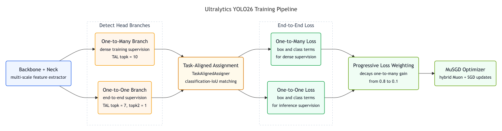
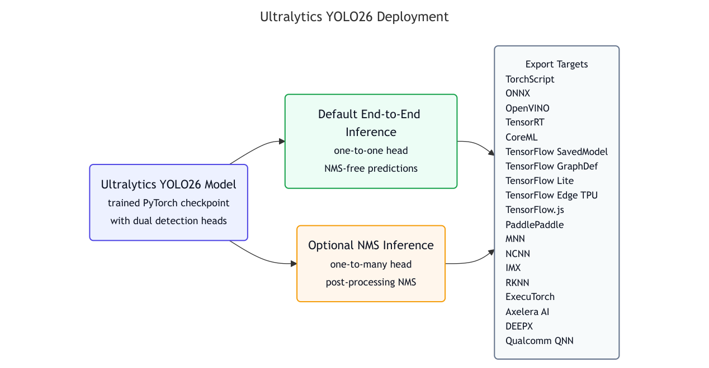
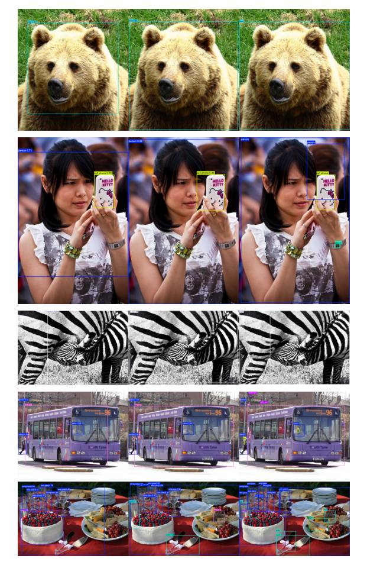
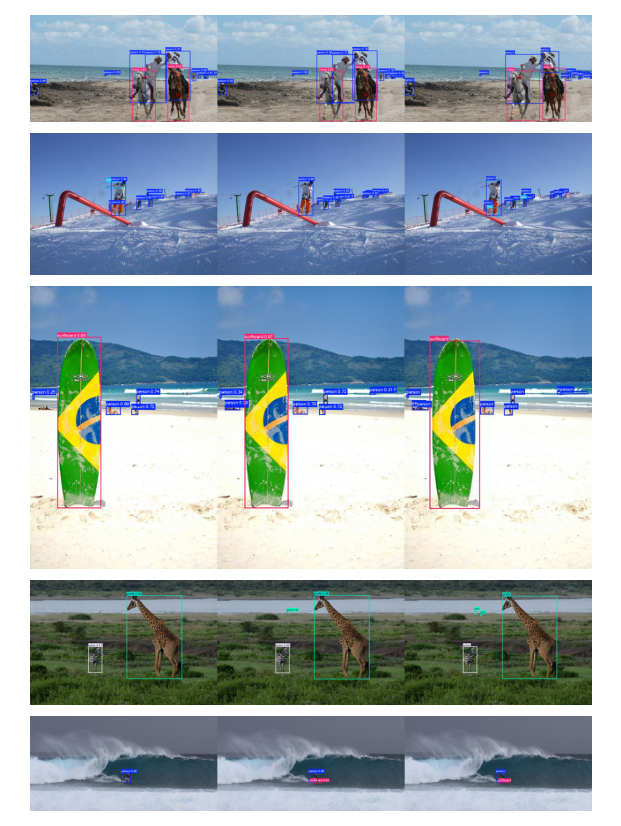
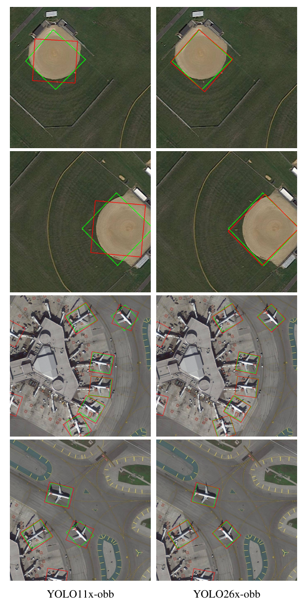

Ultralytics YOLO26: 통합 실시간 종단간 비전 모델
Ultralytics YOLO26: Unified Real-Time End-to-End Vision Models
Ultralytics YOLO26은 기존 실시간 객체 탐지기들이 겪던 비최대 억제(NMS) 후처리 의존성, 분포 초점 손실(DFL)로 인한 헤드 파라미터 비대화 및 회귀 범위 제한, 긴 학습 스케줄, 그리고 소형 객체의 레이블 할당 누락 문제를 통합적으로 해결한 차세대 실시간 종단간(End-to-End) 비전 모델 패밀리이다.
- 아키텍처 혁신: 일대다(One-to-Many) 및 일대일(One-to-One) 분기를 결합한 듀얼 헤드 구조로 네이티브 NMS-free 종단간 추론을 기본 지원하며, DFL을 완전히 제거하여 경량화된 회귀 헤드와 무제한 바운딩 박스 회귀 범위를 달성했다.
- 학습 파이프라인 혁신: LLM 학습에서 검증된 하이브리드 옵티마이저 MuSGD(Muon + SGD), 추론 시 사용되는 일대일 헤드로 손실 가중치를 점진적으로 이동시키는 Progressive Loss, 그리고 소형 객체에 대한 양성 앵커 할당을 보장하는 STAL(Small-Target-Aware Label Assignment)을 유기적으로 결합했다.
- 다중 태스크 및 오픈 보캐뷸러리 확장: 객체 탐지 외에도 인스턴스 분할(다중 스케일 프로토 경로 + 보조 시맨틱 분할 손실), 포즈 추정(RLE 기반 불확실성 모델링), 회전 바운딩 박스(OBB, 장변 각도 정의 + 정사각형 각도 손실)를 단일 파이프라인으로 지원하며, 오픈 보캐뷸러리 확장 모델인 YOLOE-26도 함께 제시한다.
- 주요 벤치마크 성능: 5개 스케일(n/s/m/l/x) 기준 COCO val2017에서 40.9–57.5 mAP(T4 TensorRT FP16 1.7–11.8 ms; E2E 경로 기준 40.1–56.9 mAP)를 달성했고, YOLO11 대비 CPU ONNX 추론 속도를 최대 43% 가속화했다. 인스턴스 분할(마스크 AP 최대 +3.7), 포즈 추정(최대 +7.2 AP), DOTA-v1.0 OBB(최대 +3.4 mAP)에서도 일관된 향상을 보였으며, YOLOE-26x는 LVIS minival 텍스트 프롬프트 조건에서 40.6 AP를 기록했다.
초록 (Abstract)
실시간 비전 응용은 다양한 하드웨어 환경에서 정확하고 효율적이며 배포가 간편한 모델을 요구한다. YOLO 패밀리는 이러한 강점 덕분에 산업계에서 널리 채택되어 왔으나, 대부분의 YOLO 탐지기는 여전히 추론 시 비최대 억제(NMS, Non-Maximum Suppression)에 의존하고, 분포 초점 손실(DFL, Distribution Focal Loss)로 인해 무거운 탐지 헤드를 유지하며, 긴 학습 스케줄을 필요로 하고, 가장 작은 객체에 대해서는 양성 레이블 할당(positive label assignment)을 전혀 받지 못할 수 있다는 한계를 지닌다. 본 논문에서는 아키텍처와 학습 기법의 조화로운 개선을 통해 이러한 제약을 해결하는 통합 실시간 비전 모델 패밀리인 Ultralytics YOLO26을 제안한다.
아키텍처 측면에서 YOLO26은 네이티브 NMS-free 종단간(end-to-end) 추론을 위한 듀얼 헤드(dual-head) 설계를 채택하고 DFL을 완전히 제거함으로써, 회귀 범위가 제한되지 않으면서도 더 가벼운 탐지 헤드를 구현한다. 학습 측면에서는 세 가지 기법이 결합되어 학습 비용을 줄이는 동시에 정확도를 높인다: 대규모 언어 모델(LLM) 학습에서 차용한 하이브리드 Muon–SGD 옵티마이저인 MuSGD, 학습이 진행됨에 따라 지도 학습의 비중을 추론용 헤드로 점진적으로 옮기는 Progressive Loss, 그리고 소형 객체에 대한 양성 앵커 커버리지를 보장하는 레이블 할당 전략인 STAL(Small-Target-Aware Label Assignment)이 그것이다.
객체 탐지를 넘어 YOLO26은 인스턴스 분할(instance segmentation), 포즈 추정(pose estimation), 회전 객체 탐지(oriented detection)를 위한 태스크 특화 헤드 및 손실 함수를 도입하여 다양한 태스크와 모델 스케일 전반에서 일관된 성능 향상을 달성한다. 모델 패밀리는 다섯 가지 스케일(n/s/m/l/x)로 구성되며, 단일 파이프라인 내에서 탐지, 인스턴스 분할, 포즈 추정, 이미지 분류, 회전 객체 탐지를 지원한다. 또한 텍스트, 시각(visual), 그리고 프롬프트 없는(prompt-free) 추론을 지원하는 오픈 보캐뷸러리(open-vocabulary) 확장 모델인 YOLOE-26도 함께 제공한다. 전 스케일에 걸쳐 YOLO26은 COCO에서 1.7–11.8 ms의 T4 TensorRT 지연 시간으로 40.9–57.5 mAP를 달성하여 기존 실시간 탐지기들의 정확도–지연 시간 파레토 프론티어(Pareto front)를 끌어올렸으며, YOLOE-26x는 텍스트 프롬프트 환경의 LVIS minival 벤치마크에서 40.6 AP를 달성하였다. 코드와 모델은 https://github.com/ultralytics/ultralytics에서 공개되어 있다.
1. 서론 (Introduction)
실시간 객체 탐지(real-time object detection)는 자율주행과 로보틱스부터 영상 관제 및 증강현실에 이르기까지 실용적인 컴퓨터 비전 응용의 핵심 기반이며, 특히 지연 시간과 전력 예산이 엄격한 엣지(edge) 디바이스에서 동작하는 경우가 많다. 이 분야는 여러 차례의 아키텍처 전환을 거치며 발전해 왔으나, 핵심 과제는 변함없이 동일하다: 배포의 단순성과 런타임 효율성을 희생하지 않으면서 정확도를 향상시키는 것이다.
Faster R-CNN [60]과 같은 2단계(two-stage) 파이프라인은 강력한 정확도 기준선을 세웠지만 상당한 추론 비용을 수반한다. SSD [44], RetinaNet [39], YOLOv3 [59], Ultralytics YOLOv5 [28] 등 1단계(one-stage) 탐지기는 후보 영역 생성(proposal generation) 단계를 밀집 예측(dense prediction)으로 대체하여 지연 시간을 크게 줄였다. 이후 FCOS [66] 및 Ultralytics YOLOv8 [69]과 같은 앵커 프리(anchor-free) 설계가 탐지 헤드를 한층 단순화했으며, YOLOv10 [78]은 일관된 이중 할당(consistent dual assignments)을 도입하여 NMS-free 추론을 가능하게 했다. 이와 병행하여 DETR [5]은 탐지를 종단간 집합 예측(end-to-end set prediction) 문제로 정식화했으며, RT-DETR [98], D-FINE [55], DEIM [21], RF-DETR [62] 같은 실시간 후속 모델들은 표준 벤치마크에서 CNN 기반 탐지기와의 정확도 격차를 좁혀 왔다. 그러나 이러한 트랜스포머 기반 모델은 종종 대규모 사전학습 비전 백본, 변형 가능 어텐션(deformable attention)과 같은 커스텀 연산자, 혹은 고정된 입력 해상도에 의존하기 때문에, 이기종 하드웨어 타깃으로의 배포가 복잡해지고 엣지 지향 추론 백엔드 전반에서의 이식성이 떨어지는 경향이 있다. 이러한 변화 속에서도 YOLO 패밀리는 산업계에서 가장 널리 배포되는 실시간 탐지기의 위치를 지켜 왔다.
이 같은 지속적인 경쟁력은 두 가지 구조적 특성에 기반한다. 첫째, 배포 범용성(deployment universality)이다. YOLO 모델은 표준 합성곱(convolutional) 연산자에 의존하므로 TensorRT [53], ONNX [54], CoreML [1], TFLite [17], OpenVINO [24], NCNN [51], ExecuTorch [57] 등 클라우드·모바일·임베디드 플랫폼 전반으로 네이티브 내보내기(export)가 가능하다(더 넓은 내보내기 지원 범위는 3.5절 [71]에서 요약한다). 둘째, 다중 태스크 통합성(multi-task unification)이다. 공통 백본(backbone)과 넥(neck) 구조 위에서 객체 탐지, 인스턴스 분할, 이미지 분류, 포즈 추정, 회전 바운딩 박스(OBB, Oriented Bounding Box) 탐지를 단일 학습 및 배포 스택으로 지원한다 [73]. 이러한 특성 덕분에 남아 있는 몇 가지 한계만 직접 해결한다면 YOLO 패러다임은 지속적인 발전을 위한 강력한 토대가 된다.
이러한 견고한 입지에도 불구하고 현재 YOLO 계열 탐지기에는 다음과 같은 구체적인 한계들이 존재한다:
- (a) NMS 의존성 및 차선적(suboptimal) 듀얼 헤드 학습: 대부분의 CNN 기반 탐지기는 추론 시 여전히 비최대 억제(NMS)에 의존한다. YOLOv10 [78]은 NMS를 제거하기 위해 듀얼 헤드 설계를 도입했으나, 학습 전반에 걸쳐 두 헤드에 동일한 손실 가중치를 적용한다. 그 결과 추론 시 실제로 사용되는 유일한 분기인 일대일(one-to-one) 분기가 밀집된 일대다(one-to-many) 분기와 동일한 최적화 압력을 받게 되어, 목표 지향적인 지도 학습이 줄 수 있는 수준에 비해 충분히 학습되지 못하는 문제가 남는다.
- (b) DFL 파라미터 비대화 및 회귀 범위 제한: YOLOv8 [69] 이후 채택된 분포 초점 손실(DFL, Distribution Focal Loss) 모듈은 바운딩 박스 회귀 출력을 공간 위치당 4개의 스칼라에서 $4K$개의 로짓(logit, 일반적으로 $K=16$)으로 확장한다. 이는 헤드 파라미터 수를 크게 증가시키며, 특히 헤드가 전체 파라미터의 상당 부분을 차지하는 나노(nano) 스케일 모델에서 불리한 트레이드오프를 야기한다. 일례로 DFL을 포함한 YOLO11n은 2.6M 파라미터와 6.5 GFLOPs를 갖는 반면, DFL을 제거하면 단 2.3M 파라미터와 5.2 GFLOPs로 줄어들어 이 단일 모듈의 제거만으로 파라미터 12%, FLOPs 20%가 감소한다. 또한 DFL은 각 변당 $(K-1) \times \text{stride}$ 픽셀이라는 유한한 회귀 범위를 강제하므로, 고해상도 입력에서 큰 객체를 다룰 때 제약이 된다. D-FINE [55]은 $K$를 늘려 이를 완화하지만, 빈(bin) 수가 증가할수록 헤드 비용이 더욱 커진다.
- (c) 긴 학습 스케줄: 표준 SGD 학습 레시피는 경쟁력 있는 COCO 정확도에 도달하기 위해 여전히 약 600 에포크(epoch)를 필요로 하여 빠른 반복 실험의 비용이 높다. 최근 Muon 옵티마이저 [40]는 대규모 언어 모델 학습에서 AdamW 대비 약 2배의 계산 효율성을 입증했으나, 아직 객체 탐지에 적용된 선행 연구는 없었다.
- (d) 소형 객체에 대한 TAL의 제로 할당(zero-assignment) 문제: Task-Aligned Learning(TAL) [14] 레이블 할당 전략은 정답(ground-truth) 박스 내부에 포함되는 기하학적 조건에 따라 후보 앵커(anchor)를 선택한다. 다운샘플링 이후 공간적 크기가 최소 스트라이드(stride)보다 작아진 객체는 박스 내부에 앵커가 하나도 존재하지 않아 양성 할당을 0개 받게 되며, 학습 중 위치 추정이나 분류 신호를 전혀 기여하지 못하게 된다.
본 논문에서는 YOLO11 [70]을 기반으로 구축된 통합 실시간 비전 모델 패밀리인 Ultralytics YOLO26을 제안한다. 탐지기 수준에서 YOLO26은 네이티브 NMS-free 추론을 위한 듀얼 헤드 설계를 채택하고 DFL을 완전히 제거하여, 회귀 범위 제약이 없는 더 가벼운 회귀 헤드를 구성한다. 위치 추정 품질을 회복하고 최적화를 개선하기 위해 YOLO26은 세 가지 상호 보완적인 학습 요소를 결합한다: 하이브리드 Muon–SGD 옵티마이저 [40]인 MuSGD, 추론 시 사용되는 일대일 헤드 쪽으로 지도 비중을 서서히 이동시키는 Progressive Loss, 그리고 TAL 하에서 극소형 객체에도 양성 후보 커버리지를 보장하는 STAL(Small-Target-Aware Label Assignment)이다.
결과 모델 패밀리는 다섯 가지 크기 변형(n/s/m/l/x)을 포괄하며 객체 탐지, 인스턴스 분할, 이미지 분류, 포즈 추정, OBB 탐지를 지원한다. 공유 탐지기 구조를 넘어 YOLO26은 보조 시맨틱 지도를 결합한 다중 스케일 프로토(multi-scale proto) 경로(인스턴스 분할), RLE 기반 불확실성 인식 키포인트 목적 함수 [33](포즈 추정), 그리고 전용 각도 지도를 결합한 개선된 장변 각도(long-edge angle) 정식화(회전 객체 탐지)를 통해 태스크 특화 확장을 도입한다. 전 스케일에 걸쳐 YOLO26 패밀리는 이러한 확장과 공유 탐지기 개선을 결합해 YOLO11 대비 COCO 인스턴스 분할 마스크 AP에서 최대 +3.7, COCO 키포인트 포즈 AP에서 최대 +7.2, DOTA-v1.0 OBB 탐지 mAP에서 최대 +3.4의 성능 향상을 달성하였다.
닫힌 집합(closed-set) 탐지를 넘어, 우리는 YOLO26 탐지기 위에 YOLOE [79]의 오픈 보캐뷸러리 정식화를 구현한 YOLOE-26으로 모델 패밀리를 확장한다. YOLOE-26은 YOLOE의 세 가지 추론 모드(텍스트 프롬프트, 시각 프롬프트, 프롬프트 없음)를 유지하면서, 더 강력한 탐지 백본, 업그레이드된 텍스트 인코더(MobileCLIP2 [13]), 의사 레이블(pseudo-label) 데이터 엔진, 그리고 분리된 분할 학습(decoupled segmentation training)을 도입한다. LVIS minival에서 YOLOE-26x는 텍스트 프롬프트 조건 하에 40.6 AP를 달성하여 DetCLIP-T [91]를 +6.2 AP 차이로 능가한다(부록 S7절 참조).
그림 1은 COCO val2017에서의 정확도–지연 시간 트레이드오프를 요약한다. 모든 모델 스케일에서 YOLO26은 파레토 프론티어 위에 위치하거나 이를 전진시키며, 특히 medium, large, extra-large 스케일에서 가장 우수한 AP–지연 시간 균형을 달성한다. 동일 스케일 비교에서 YOLO26은 YOLO11 대비 COCO AP를 1.6–2.8점 향상시키며(전체 스케일별 비교는 부록 S4절 참조), 최근 제안된 다른 실시간 탐지기들 역시 정확도–지연 시간 경계 전반에서 능가한다.

요약하면, 본 연구의 주요 기여는 다음과 같다:
- DFL 없는 듀얼 헤드 아키텍처: 더 가벼운 회귀 헤드와 무제한 바운딩 박스 회귀 범위를 갖춘 네이티브 NMS-free 종단간 추론을 제공하며, 정확도가 최우선인 배포 환경을 위해 선택적 밀집 분기(dense branch)도 함께 유지한다.
- 조화롭게 결합된 3요소 학습 파이프라인: MuSGD, Progressive Loss, STAL을 함께 적용하여 수렴을 가속화하고, 최적화를 종단간 추론 경로에 정렬하며, 가장 작은 객체에 대해서도 안정적인 지도 신호를 보장한다.
- 태스크 특화 헤드 및 손실 설계: 인스턴스 분할(보조 시맨틱 지도를 포함한 다중 스케일 프로토타입 융합), 포즈 추정(불확실성 인식 RLE 키포인트 회귀), 회전 객체 탐지(장변 각도 정식화 및 종횡비 인식 각도 지도) 각각에서 단일 통합 패밀리 내에 YOLO11 대비 일관된 성능 향상을 달성한다.
- YOLOE-26: 업그레이드된 텍스트 인코더, 의사 레이블 데이터 엔진, 분리된 분할 학습을 결합하여 YOLOE [79] 정식화를 YOLO26 탐지기에 적용한 오픈 보캐뷸러리 확장 모델로, LVIS minival 텍스트 프롬프트 평가에서 40.6 AP를 달성한다.
2. 관련 연구 (Related Work)
2.1. CNN 기반 객체 탐지: 2단계에서 NMS-Free까지
CNN 기반 객체 탐지는 정확도와 효율성의 균형을 맞추는 설계 전환을 거치며 발전해 왔다. 초기 접근법은 먼저 후보 영역을 생성한 뒤 이를 분류하고 정제하는 2단계 파이프라인이 주도했다. R-CNN은 영역 제안(region proposal)과 CNN 특징을 결합하여 이 패러다임을 열었고, Fast R-CNN은 RoI 풀링(RoI pooling)을 통해 후보 간 연산을 공유하여 효율을 높였으며, Faster R-CNN은 영역 제안 네트워크(RPN)를 네트워크 내부에 통합해 종단간 학습과 우수한 속도–정확도 균형을 달성했다 [15, 16, 60].
지연 시간을 줄이기 위해 1단계 탐지기는 후보 생성 단계를 제거하고 특징 맵 전반에 걸쳐 클래스와 박스를 밀집 예측한다. SSD는 기본 박스(default box)를 이용한 효율적인 다중 스케일 밀집 예측을 보여주었으며 [44], RetinaNet은 Focal Loss를 통해 전경–배경 불균형을 완화하여 밀집 탐지 정확도를 높였다 [39]. YOLO 계보는 실시간 동작을 목표로 발전해 왔는데, YOLOv3는 다중 스케일 예측과 백본 설계를 강화했고 [59], Ultralytics YOLOv5는 정제된 학습 레시피와 함께 산업계에 널리 채택된 배포 지향 구현을 제공했다 [28].
앵커 프리 탐지기는 수작업으로 설계한 앵커를 제거함으로써 밀집 예측을 더욱 단순화하고 데이터셋 간 이식성을 높였다. FCOS는 탐지를 특징 맵 상의 픽셀별 분류 및 박스 회귀로 정식화했고 [66], CenterNet은 객체를 키포인트와 그 기하학적 관계로 표현했다 [12]. 최근의 실시간 시스템들도 실무에서 앵커 프리 헤드를 채택하고 있으며, Ultralytics YOLOv8은 앵커 프리 분리 헤드(split-head) 설계와 배포 지향 개선 사항을 통해 정확도와 효율성을 확보하였다 [69].
앵커 제거를 넘어 최근 연구들은 후처리, 특히 비최대 억제(NMS)에 대한 의존도를 없애 종단간 탐지를 구현하는 데 초점을 맞추고 있다. YOLOv10은 일관된 이중 할당(consistent dual assignments)을 통해 두 개의 학습 분기—밀집 지도를 제공하는 일대다 분기와 추론 시 직접 디코딩을 위해 정답 인스턴스당 단일 예측만 매칭하도록 학습하는 일대일 분기—를 활용함으로써 NMS-free 추론을 가능하게 했다 [78].
2.2. 트랜스포머 기반 객체 탐지
트랜스포머 기반 탐지기는 일대일 헝가리안 매칭(Hungarian matching)을 사용하는 종단간 집합 예측으로 탐지를 정식화하여 앵커와 NMS를 모두 제거한다. DETR은 트랜스포머 인코더–디코더와 고정된 수의 객체 쿼리(object query)를 도입해 이 방식을 제시했다 [5]. Deformable DETR은 희소 변형 가능 어텐션(sparse deformable attention)으로 효율성과 수렴 속도를 높였으며, 반복적 박스 정제와 2단계 top-$K$ 제안 초기화 변형을 도입했다 [100]. 후속 연구들은 쿼리 설계와 학습 기법을 고도화했다: DAB-DETR은 쿼리를 디코더 레이어를 거치며 정제되는 학습 가능한 앵커 박스로 매개변수화했고 [42], DN-DETR은 노이즈가 섞인 정답 타깃으로 만든 디노이징(denoising) 쿼리를 통해 수렴을 가속화했으며 [29], DINO는 혼합 쿼리 선택, 대조적 디노이징(contrastive denoising), look-forward-twice 정제 기법을 통해 초기화와 최적화를 더욱 향상시켰다 [97]. 순수 일대일 학습을 넘어 H-DETR과 같은 하이브리드 매칭 방법은 학습 중 보조 일대다 할당을 결합해 양성 지도를 늘리면서도 일대일 추론을 유지하며, Group DETR 역시 그룹별 매칭을 수행하는 다중 쿼리 그룹을 통해 더 풍부한 지도를 제공한다 [6, 25].
트랜스포머 탐지기는 다중 스케일 특징 처리를 개선하고 연산 오버헤드를 줄임으로써 실시간 용도로도 적응되어 왔다. RT-DETR은 효율적인 인코더 설계와 배포 지향 선택을 통해 실용적인 속도–정확도 균형을 추구했으며 [98], RT-DETRv4 같은 후속 연구는 소형 모델을 위한 더 강력한 증류(distillation) 전략을 탐구했다 [37]. 동시에 D-FINE과 DEIM은 정교한 회귀/최적화 및 매칭 인식 목적 함수를 통해 위치 추정과 학습 효율을 개선했고, DEIMv2 등의 후속 버전도 실시간 DETR 파이프라인의 수렴과 정확도를 계속 최적화하고 있다 [20, 21, 55]. LW-DETR 같은 경량 설계는 저지연 배포를 위해 아키텍처를 한층 간소화했으며 [7], RF-DETR은 실용적인 정확도–지연 시간 트레이드오프를 갖춘 실시간 탐지 트랜스포머 패밀리 구축에 기여하였다 [62].
2.3. 인스턴스 분할 (Instance Segmentation)
인스턴스 분할은 객체 탐지를 확장하여 각 인스턴스에 대한 픽셀 단위의 정밀한 마스크를 예측하는 과제로, 정확도와 실시간 효율성 사이의 지속적인 트레이드오프를 수반한다. Mask R-CNN은 2단계 탐지기에 RoI-aligned 마스크 분기를 추가하여 고품질 마스크를 생성한다 [19]. RoI별 연산을 피하기 위해 제안 없는(proposal-free) 방법들은 완전 합성곱(fully convolutional) 방식으로 마스크를 예측한다: CondInst는 공유 마스크 특징에 적용되는 동적 합성곱 파라미터를 예측해 인스턴스 조건부 마스크 헤드를 생성하며 [67], SOLOv2는 인스턴스를 위치에 할당하고 위치별 동적 마스크 커널을 예측하여 공유 마스크 특징으로부터 마스크를 생성한다 [82].
실시간 환경에서는 소수의 공유 기저(basis)로부터 인스턴스 마스크를 재구성하는 프로토타입(prototype) 기반 접근법이 널리 쓰인다. YOLACT는 전역 프로토타입 마스크와 인스턴스별 계수(coefficient)를 예측해 선형 결합 및 크롭(cropping)으로 마스크를 형성함으로써 경쟁력 있는 정확도와 빠른 마스크 생성을 달성했다 [2]. Ultralytics YOLO 분할 헤드(예: YOLO11)도 이와 유사한 프로토타입–계수 정식화를 채택하여, 탐지 특징으로부터 공유 프로토타입과 인스턴스별 마스크 계수를 함께 예측해 최소한의 인스턴스당 오버헤드로 마스크를 구축한다 [70].
보다 최근에는 트랜스포머 기반 인스턴스 분할이 더 강력한 전역 문맥(global context)을 활용해 집합 기반 디코딩으로 마스크를 예측한다. Mask2Former는 마스크 어텐션(masked-attention) 디코딩을 사용해 인스턴스 마스크와 클래스 집합을 출력하며 [8], MaskDINO는 통합 트랜스포머 프레임워크 내에서 디노이징 기반 학습과 향상된 마스크 디코딩을 결합하여 수렴 속도와 마스크 품질을 한층 개선하였다 [31].
2.4. 포즈 추정 (Pose Estimation)
인체 포즈 추정은 직접 좌표 회귀(DeepPose [68])에서 시작하여 인코더–디코더 네트워크 기반 히트맵 예측(Stacked Hourglass [52])과 디컨볼루션 기준선(SimpleBaselines [85])으로 발전하였다. HRNet은 병렬 서브네트워크 융합을 통해 고해상도 표현을 유지하며 [64], OpenPose는 키포인트와 Part Affinity Fields를 공동 예측하는 상향식(bottom-up) 접근을 취한다 [4]. ViTPose는 확장 가능한 트랜스포머 백본의 효과를 입증했고 [87], RTMPose는 CSPNeXt와 좌표 분류 헤드를 통해 실시간 성능을 달성했다 [27].
YOLO 기반 포즈 추정 분야에서는 YOLO-Pose가 스케일 인식 OKS(Object Keypoint Similarity) 기반 학습 목적 함수를 사용하여 사람 탐지와 키포인트 회귀를 동시에 수행하는 히트맵 프리 1단계 정식화를 도입했다 [48]. 이후 YOLOv7이 전체 YOLO 패밀리에 키포인트 헤드를 통합했고, YOLOv8과 YOLO11이 앵커 프리 포즈 헤드로 이 방향을 이어갔다 [69, 70, 80]. YOLO26은 이러한 직접 회귀 계보를 계승하면서 정규화 흐름(normalizing flow) 기반의 확률적 목적 함수인 RLE [33]를 추가해 기존 회귀를 대체함으로써 더욱 정확하고 보정된(calibrated) 키포인트 위치 추정을 달성한다.
2.5. 회전 바운딩 박스 탐지 (Oriented Bounding Box Detection)
회전 객체 탐지는 축 정렬(axis-aligned) 박스가 과도한 중첩을 유발하는 항공 영상이나 장면 텍스트 등의 응용에 동기를 두어 임의 회전 각도를 갖는 박스로 탐지를 확장한다. 초기 방법은 회전 앵커를 사용하는 RPN을 적용했고 [47], RoI Transformer [10] 및 Oriented R-CNN [86] 같은 2단계 탐지기는 회전 인식 헤드를 적용해 높은 정확도를 달성했다. 핵심적인 난제는 각도 표현이다: 단순 회귀는 주기성 경계(대칭 박스의 경우 $\pm\pi/2$)에서 작은 기하학적 변화가 큰 손실 급증을 일으키는 경계 불연속성(boundary discontinuity) 문제를 겪는다. Circular Smooth Label(CSL) [88]은 각도 예측을 원형 분류 문제로 재정의해 이를 해결한다. 가우시안(Gaussian) 기반 방법들은 회전 박스를 2D 가우시안 분포로 모델링하고 Wasserstein 거리(GWD [89])나 칼만 필터 기반 IoU 대리 지표(KFIoU [90])로 유사도를 측정해 이 문제를 우회한다. 그러나 가우시안 모델링 기법은 정사각형 회전 객체에서 각도 모호성(angle ambiguity)을 야기할 수 있어 각도 편차를 벌점화하는 추가 각도 손실 [93]이 제안되었으며, PSC와 PSCD [94]는 위상(phase) 기반 방향 각도 코더를 도입하여 PSC로 경계 불연속성을 해결하고 PSCD의 이중 주파수 위상 표현으로 정사각형 유사 객체의 모호성을 완화하였다. S2ANet [18]과 같은 앵커 프리 설계는 회전 제안 영역에 특징을 정렬해 정밀한 위치 추정을 수행하며, LSKNet [36]과 같은 최신 백본은 항공 장면에 흔한 길쭉한 구조에 적합한 대형 선택적 커널을 활용한다.
YOLO 패밀리 내에서는 YOLOv8 [69]과 YOLO11 [70]이 ProbIoU [45]로 학습되는 전용 각도 분기를 갖춘 OBB 헤드를 도입하였다. YOLO26은 전용 종횡비 인식 각도 손실(aspect-ratio-aware angle loss)과 최적화된 디코더를 통해 이 계보를 확장하여, 회전 박스 표현에서의 각도 모호성과 경계 불연속성을 효과적으로 해결한다.
2.6. 오픈 보캐뷸러리 탐지 및 분할 (Open-Vocabulary Detection and Segmentation)
오픈 보캐뷸러리 탐지 기법은 추론 시 목표 범주를 지정하는 방식에 따라 크게 텍스트 프롬프트(text-prompted), 시각 프롬프트(visual-prompted), 그리고 프롬프트 없음(prompt-free)으로 분류할 수 있다. 텍스트 프롬프트 탐지는 비전–언어 사전학습을 통해 자연어 질의를 시각적 영역에 접지(grounding)한다. GLIP [34]은 탐지를 구문 접지(phrase grounding)로 재정식화하여 대조 학습(contrastive objective)으로 영역 특징과 토큰 수준 텍스트 임베딩을 정렬한다. Grounding DINO [43]는 이 아이디어를 긴밀한 교차 모달 융합을 갖춘 트랜스포머 탐지기로 확장해 강력한 제로샷 위치 추정을 달성했다. YOLO-World [9]는 재매개변수화 가능한 교차 어텐션을 통해 CLIP 텍스트 임베딩을 YOLO 넥에 주입함으로써 텍스트 조건부 탐지를 실시간 영역으로 끌어왔고, YOLO-UniOW [41]는 단일 YOLO 계열 모델 아래 오픈 월드 탐지를 더욱 통합했다.
이러한 범용성에도 불구하고 텍스트 프롬프트는 새로운 산업 결함이나 세밀한 생물학적 표본처럼 언어로 정밀하게 묘사하기 어려운 객체에는 부적합하다. 시각 프롬프트 탐지는 텍스트 대신 참조 이미지나 영역을 제공함으로써 이 간극을 메운다. OWL-ViT [49]와 OV-DETR [95]은 공유 CLIP 인코더를 통해 텍스트 질의와 함께 이미지 예시(exemplar)를 처리하여 단일 아키텍처에서 두 모달리티를 모두 지원한다. DINOv [32]는 범용 및 지칭 비전 태스크를 위한 인컨텍스트(in-context) 예시로 참조 영역을 활용하며, T-Rex2 [26]는 영역 수준 대조 학습을 통해 더 긴밀한 다중 모달 정렬을 달성한다. 분할 분야에서는 SEEM [101]과 Semantic-SAM [30]이 포인트, 박스, 참조 마스크 등 다양한 프롬프트 유형을 파놉틱(panoptic) 및 파트(part) 수준의 세분성에서 처리한다.
프롬프트 없는 탐지는 탐지기를 생성형 언어 모델과 결합함으로써 명시적인 질의에 대한 의존성을 완전히 제거한다. GRiT [83]은 영역 제안 백본에 자기회귀(autoregressive) 텍스트 디코더를 부착해 밀집 캡셔닝과 탐지를 공동 수행한다. DetCLIPv3 [92]는 웹 규모 데이터로 객체 캡셔너를 학습해 임의 영역에 대한 풍부한 레이블 정보를 생성하며, GenerateU [38]는 언어 모델을 사용해 객체 이름을 자유 형식으로 생성함으로써 사전 정의된 어휘 사전으로부터 인식을 분리한다. YOLOE [79]는 RepRTA, SAVPE, LRPCHead 구성을 통해 단일 실시간 모델 내에서 텍스트 프롬프트, 시각 프롬프트, 프롬프트 없음의 세 패러다임을 모두 통합하였다. 본 논문의 YOLOE-26은 이러한 통합 정식화를 계승하고, 더 강력한 백본, 업그레이드된 텍스트 인코더, 의사 레이블 데이터 엔진, 그리고 분리된 분할 학습으로 이를 한 단계 발전시킨다.
3. 방법론 (Methodology)
YOLO26은 통합 실시간 비전 프레임워크로서 YOLO11 패밀리를 기반으로 구축되면서도 공유 탐지기 설계와 태스크 특화 헤드를 모두 개편한다. 탐지 수준에서 이 방법론은 듀얼 헤드 종단간 정식화, DFL 없는 박스 회귀, MuSGD, Progressive Loss, 그리고 소형 객체 인식 레이블 할당(STAL, Small-Target-Aware Label Assignment)을 결합한다. 본 절에서는 먼저 공유 아키텍처와 학습 파이프라인을 설명하고, 이어서 인스턴스 분할, 포즈 추정, 회전 바운딩 박스 탐지, 그리고 오픈 보캐뷸러리 변형 모델인 YOLOE-26에 대한 태스크별 확장을 다룬다.
3.1. 개요 (Overview)
YOLO11 [70] 대비 YOLO26은 세 가지 설계 목표를 중심으로 구성된다: 종단간 단순성(end-to-end simplicity), 배포 효율성(deployment efficiency), 그리고 더 강력한 최적화(stronger optimization)이다. 이러한 목표는 네이티브 NMS-free 일대일 추론 경로, 경량 DFL-free 회귀 헤드, 그리고 MuSGD·Progressive Loss·STAL을 결합한 학습 파이프라인을 통해 실현된다.
그림 2는 학습 중 이러한 구성 요소들이 어떻게 상호 작용하는지 요약한다. 공유 백본과 넥이 일대다(one-to-many) 헤드와 일대일(one-to-one) 헤드에 특징을 공급하고, STAL은 극소형 타깃에 대한 할당을 보존하며, Progressive Loss는 학습 진행에 따라 두 분기의 목적 함수 가중치를 재조정하고, MuSGD가 최종 모델 파라미터 업데이트를 수행한다.

3.2. 아키텍처 설계 (Architecture Design)
본문에서는 탐지 목적 함수와 가장 직접적으로 연관된 아키텍처 아이디어에 초점을 맞추며, 전체 모델 개략도와 구성 블록의 세부 조합은 부록 S2절 및 부록 그림 S1·S2에 제시되어 있다. 표 1은 주요 탐지 구성 요소를 Ultralytics 저장소 내의 구현 이름과 매핑하여 보여준다.
| 구성 요소 (Component) | 구현 이름 (Implementation) | 역할 (Role) |
|---|---|---|
| 듀얼 헤드 (Dual head) | Detect |
종단간(E2E) 및 NMS 경로 지원 |
| 직접 회귀 (Direct regression) | reg_max=1 |
DFL 없는(DFL-free) 박스 예측 |
| STAL | TaskAlignedAssigner |
극소형 객체 커버리지 보장 |
| Progressive Loss | E2ELoss |
분기별 손실 가중치 재조정 |
| 옵티마이저 (Optimizer) | MuSGD |
더 빠른 수렴 달성 |
3.2.1. 종단간 NMS-Free 탐지 (End-to-End NMS-Free Detection)
대부분의 CNN 기반 탐지기는 추론 시 중복 예측을 제거하기 위해 비최대 억제(NMS)에 의존한다. 반면 YOLO26은 종단간 NMS-free 디코딩과 기존의 밀집 예측을 모두 지원하는 듀얼 헤드 설계를 제공하여, 배포 환경에 따른 유연한 트레이드오프 선택을 가능하게 한다.
일대일 헤드 (One-to-One Head, 기본값). 일대일 헤드는 NMS 없이 고정 크기의 예측 집합을 생성하며, 이미지당 최대 300개의 탐지 결과를 출력한다(배치 크기 $N$에 대해 형상 $(N, 300, 6)$). YOLOv10 [78]을 따라, 두 헤드는 Task-Aligned Learning(TAL) [14]에 기반한 일관된 이중 경로 레이블 할당(consistent dual-path label assignment)으로 학습된다. 두 헤드 모두 동일한 TAL 정식화를 공유하되 매칭 기수(cardinality)만 다르게 설정한다. 현재 구현에서 일대일 경로는 먼저 $\text{topk} = 7$로 TAL 후보 집합을 구성한 뒤 2차 필터인 $\text{topk2} = 1$을 적용하여, 각 정답 인스턴스당 고유한 종단간 할당을 생성함으로써 추론 시 직접 디코딩을 가능하게 한다.
일대다 헤드 (One-to-Many Head). 일대다 헤드는 표준 밀집 YOLO 스타일의 예측을 유지하며 학습 중 더 풍부한 양성 지도를 제공하기 위해 $\text{topk} = 10$으로 TAL을 사용한다. 출력 형상은 $(N, n_c + 4, 8400)$이며, 여기서 $n_c$는 클래스 개수이다. 이 헤드는 추론 시 NMS를 사용하며, 추가 후처리 오버헤드를 감수하는 대신 일반적으로 약간 더 높은 정확도를 달성한다.
종합하면, 듀얼 헤드 설계는 실용적인 정확도–지연 시간 조절 노브(knob)를 제공한다: 일대일 헤드는 단순성과 속도(NMS-free, 고정 출력)를 우선시하는 반면, 일대다 헤드는 NMS 오버헤드를 허용할 수 있는 환경에서 최고 정확도를 겨냥한다.
3.2.2. 분포 초점 손실(DFL) 제거 (Distribution Focal Loss Removal)
YOLO26은 탐지 헤드에서 분포 초점 손실(DFL, Distribution Focal Loss) 모듈을 완전히 제거한다. DFL은 Generalized Focal Loss(GFL) [35]에서 분포 기반 박스 회귀 정식화로 도입되었으며, Ultralytics YOLOv8 [69]을 비롯해 YOLOv9 [81], YOLOv10 [78], YOLO11 [70] 등 최신 YOLO 계열 탐지기에서 널리 사용되어 왔다. DFL에서는 박스의 각 변을 $K$개의 빈(일반적으로 $K=16$)에 대한 이산 분포로 예측하고 기댓값으로 디코딩한다:
$$ d = \sum_{i=0}^{K-1} i \cdot \operatorname{softmax}(z)_i, \qquad z \in \mathbb{R}^K, \tag{1} $$이로 인해 위치당 회귀 출력이 4개의 스칼라에서 $4K$개의 로짓으로 팽창하며 헤드 파라미터와 연산량이 비례해 증가한다—이는 특히 나노 스케일 모델에서 매우 불리한 트레이드오프가 된다.
또한 DFL은 유한한 이산 지지 범위(discrete support range)를 부과한다. 스트라이드 $s$를 곱하기 전 $d \in [0, K-1]$이므로 변당 최대 거리는 $(K-1)s$ 픽셀로 제한된다(따라서 해당 특징 레벨에서 너비/높이는 약 $2(K-1)s$로 상한이 정해진다). $K=16$일 때 이는 약 $30s$(예: $s=32$에서 약 $960$ 픽셀)에 불과해 고해상도(예: 1280) 입력에서 큰 객체를 탐지할 때 제약이 될 수 있다. $K$를 늘리는 방식(예: D-FINE은 더 큰 빈 수를 사용 [55])은 이 제약을 완화하지만 헤드 비용을 한층 더 증가시킨다. 이에 YOLO26은 더 단순한 직접 회귀 헤드(reg_max=1)를 채택하고, 위치 추정 품질은 상호 보완적인 학습 목적 함수인 Progressive Loss(3.3.2절)와 STAL(3.3.3절)을 통해 회복한다. 이러한 설계 선택의 정량적·정성적 근거는 4.3.1절의 DFL 제거 절제 실험(ablation)에 제시되어 있다. 특히 그림 4는 640 해상도에서는 잘 드러나지 않는 실패 양상을 1280 해상도 학습 환경에서 명확히 보여주며, DFL이 없는 헤드가 큰 객체의 전체 영역을 훨씬 더 안정적으로 보존함을 입증한다.
마지막으로, DFL 제거는 모델 내보내기를 단순화하고 표준 연산자와 최소한의 디코딩 오버헤드를 선호하는 제약된 런타임 및 하드웨어 가속기와의 호환성을 향상시킨다. 전반적으로 이 선택은 보상 학습 개선 기법을 통해 강력한 탐지 성능을 유지하면서도 자원 제약적 배포를 위한 명확한 정확도–효율성 균형을 달성한다.
3.3. 학습 방법론 (Training Methodology)
공유 백본과 넥 특징으로부터 출발하여, YOLO26은 일대다 헤드와 일대일 헤드를 공동으로 최적화하고, 레이블 할당 단계에서 STAL을 적용해 극소형 타깃에 대한 지도를 보존하며, 두 분기의 손실을 Progressive Loss로 결합한 뒤 MuSGD로 모델 파라미터를 업데이트한다. 이러한 관점은 제안된 학습 기법들이 개별적인 수정 사항이 아니라 하나의 통합 파이프라인으로 맞물려 동작함을 보여준다.
3.3.1. MuSGD 옵티마이저
YOLO26은 최근의 대규모 학습 사례 [50]에서 착안하여 Muon [40]과 표준 SGD-모멘텀 [58]을 결합한 하이브리드 옵티마이저인 MuSGD를 채택한다. Muon은 모멘텀 업데이트를 적용한 뒤 몇 차례의 Newton–Schulz 반복을 통해 모멘텀 기반 업데이트를 경량 직교화(orthogonalization)함으로써 업데이트의 조건수(conditioning)를 개선하고 최적화를 안정화할 수 있다 [40]. 우리는 SGD를 견고한 기준 구성 요소로 유지하면서도 이러한 특성을 객체 탐지기 학습에 활용한다.
구체적으로 MuSGD는 합성곱 커널이나 선형 가중치 같은 다차원 파라미터에는 Muon 업데이트와 SGD 업데이트의 가중 혼합을 적용하고, 편향(bias)이나 정규화 스케일(normalization scale)과 같은 1차원 파라미터에는 순수 SGD를 사용한다. 이러한 파라미터 유형별 분리는 스케일/시프트 파라미터를 안정적으로 유지하면서 고차원 가중치 텐서에 대해서는 직교화된 업데이트의 이점을 취할 수 있게 하여, 실제 학습에서 안정성을 높이고 수렴을 가속화한다(4.3.2절 참조).
3.3.2. Progressive Loss
듀얼 헤드 종단간 탐지기는 학습 중 본질적인 최적화 비대칭성(optimization asymmetry)을 보인다. 밀집된 일대다 분기는 더 넓은 양성 지도를 받기 때문에 학습 초기에 최적화가 더 쉬운 반면, 일대일 분기는 더 엄격히 제약되어 있지만 궁극적으로 모델의 종단간 추론 성능을 결정한다. 학습 전체 기간 동안 두 분기에 고정된 동일 손실 가중치를 적용하면 이러한 비대칭성을 활용하지 못해 추론 분기가 충분히 최적화되지 않을 수 있다.
이 문제를 해결하기 위해 YOLO26은 학습 과정에 걸쳐 최적화의 무게 중심을 밀집 분기에서 일대일 분기로 점진적으로 옮기는 커리큘럼 스타일의 재가중(reweighting) 전략인 Progressive Loss를 도입한다. 최적화 초기에는 밀집 분기를 강조하여 특징 학습을 안정화하고 신뢰할 수 있는 지도를 제공한다. 학습이 진행됨에 따라 일대일 분기에 점차 더 큰 비중을 부여하여, 최종 최적화 목적 함수가 배포 시 사용되는 NMS-free 추론 경로와 더 잘 정렬되도록 한다.
형식적으로 전체 탐지 손실은 다음과 같이 정의된다:
$$ \mathcal{L}_{\text{total}} = \alpha(t)\,\mathcal{L}_{\text{one2many}} + \bigl(1 - \alpha(t)\bigr)\,\mathcal{L}_{\text{one2one}}, \tag{2} $$여기서 $t$는 현재 에포크를 나타내며, $\alpha(t)$는 다음과 같이 선형적으로 감소하는 스케줄이다:
$$ \alpha(t) = \max\!\left(1 - \frac{t}{\max(E - 1, 1)},\, 0\right)(\alpha_{\text{init}} - \alpha_{\text{final}}) + \alpha_{\text{final}}, \tag{3} $$여기서 $E$는 총 학습 에포크 수, $\alpha_{\text{init}}$은 초기 일대다 가중치, $\alpha_{\text{final}}$은 최종 일대다 가중치이다. 따라서 목적 함수는 시간이 지남에 따라 밀집 지도에서 추론 지향 지도로 매끄럽게 전환된다. $\alpha_{\text{init}}$, $\alpha_{\text{final}}$의 정확한 값과 분기별 할당 설정은 4.1절의 구현 세부 사항에서 다룬다.
Progressive Loss는 두 분기가 사용하는 비대칭 할당과 상호 보완적으로 작용한다: 일대다 분기는 더 풍부한 후보 지도로부터 이점을 얻고, 일대일 분기는 종단간 예측에 맞춘 더 엄격한 할당을 사용한다. 이처럼 상이한 역할에 맞추어 손실 강조점을 조절함으로써 Progressive Loss는 초기 최적화 안정성을 높이는 동시에 최종 모델을 배포 시 동작과 더욱 긴밀히 일치시킨다.
3.3.3. 소형 객체 인식 레이블 할당 (STAL, Small-Target-Aware Label Assignment)
Task-aligned assignment(TAL)는 먼저 각 정답 박스 내부에 떨어지는 앵커 중심(anchor center)으로 지도 대상을 제한한다. 이러한 기하학적 필터링은 보통 크기 객체에는 효과적이지만, 매우 작은 인스턴스에 대해서는 취약해진다: 특징 맵 이산화(discretization) 이후 극소형 박스는 내부에 유효한 앵커 중심을 단 하나도 포함하지 못할 수 있으며, 이 경우 해당 객체는 양성 후보를 0개 받아 학습 중 위치 추정이나 분류 신호를 전혀 기여하지 못한다.
YOLO26은 후보 선택에 사용되는 기하학적 영역과 회귀에 사용되는 기하학적 영역을 분리(decouple)하는 STAL(Small-Target-Aware Label Assignment)로 이 실패 모드를 해결한다. 정답 박스가 $g_i = (x_i, y_i, w_i, h_i)$로 매개변수화되고 $s_{\min}$이 특징 피라미드의 최소 스트라이드를 나타낸다고 하자. 오직 후보 필터링 단계에서만 STAL은 다음과 같은 할당 대리 박스(assignment surrogate)를 구성한다:
$$ \tilde{g}_i = (x_i, y_i, \tilde{w}_i, \tilde{h}_i), \tag{4} $$여기서 각 공간 차원은 독립적으로 다음과 같이 조정된다:
$$ \tilde{d}_i = \begin{cases} s_{\text{ref}}, & d_i < s_{\min}, \\ d_i, & \text{otherwise}, \end{cases} \qquad d_i \in \{w_i, h_i\}, \tag{5} $$여기서 $s_{\text{ref}}$는 특징 피라미드로부터 도출된 고정 참조 크기(reference size)이다. 현재 구현에서는 가능할 경우 두 번째 피라미드 스트라이드로 설정되며, 정확한 기본값은 4.1절에 명시되어 있다. 이후 각 정답 객체 $i$와 $j$번째 앵커 중심 $a_j$에 대해 이진 후보 마스크를 다음과 같이 정의한다:
$$ M_{ij} = \begin{cases} 1, & \text{if anchor center } a_j \text{ lies inside } \tilde{g}_i, \\ 0, & \text{otherwise}. \end{cases} \tag{6} $$중요한 점은 STAL이 오직 후보 선택 마스크만 수정한다는 것이다. 원래의 박스 $g_i$는 task-aligned 점수 계산, 최종 타깃 할당, 그리고 박스 회귀에 그대로 보존되므로, 탐지기는 여전히 실제 객체 영역에 대해 최적화된다. 이러한 특성 덕분에 STAL은 의도적으로 보수적인 설계를 취한다: 일반 크기 객체의 위치 추정 타깃을 변형하거나 지도를 과도하게 부풀리지 않으면서도, 기존 할당 파이프라인에서 탈락할 수밖에 없었던 극소형 인스턴스들의 병리적인 제로-양성(zero-positive) 사례를 방지한다.
3.4. 태스크 특화 확장 (Task-Specific Extensions)
공유 탐지 아키텍처와 학습 방법론을 넘어, YOLO26은 인스턴스 분할, 포즈 추정, 회전 바운딩 박스 탐지를 위한 태스크 특화 확장을 도입한다. 이러한 확장은 공통 종단간 백본과 넥을 유지하면서 각 태스크의 구조적 요구 사항에 맞게 예측 헤드와 지도 방식을 적응시킨다.
이미지 분류 (Image Classification). YOLO26 분류 변형 모델들은 공유 백본 위에 표준 Ultralytics Classify 헤드를 재사용한다. 분류 분기는 새로운 태스크 특화 디코딩 규칙을 도입하지 않으므로 별도의 방법론적 기여보다는 모델 패밀리가 지원하는 기본 태스크로 다루며, 옵티마이저 전이 검증 결과는 부록 S1절에 보고되어 있다.
3.4.1. 인스턴스 분할 (Instance Segmentation)
YOLO 스타일의 인스턴스 분할은 이미지당 하나의 공유 프로토타입 텐서를 예측하고 각 양성 인스턴스가 계수 벡터를 예측해 마스크를 재구성하는 프로토타입 기반 표현을 채택한다 [2, 70]. 프로토타입 텐서 $P \in \mathbb{R}^{K \times H \times W}$(여기서 $P_k \in \mathbb{R}^{H \times W}$는 $k$번째 프로토타입 맵)와 인스턴스별 계수 $c_i \in \mathbb{R}^K$가 주어졌을 때, 인스턴스 $i$의 마스크 로짓 $\hat{M}_i \in \mathbb{R}^{H \times W}$는 다음과 같이 생성된다:
$$ \hat{M}_i = \sum_{k=1}^{K} c_{ik} P_k. \tag{7} $$YOLO26은 이 경량 재구성 규칙을 유지하면서도 두 가지 분할 특화 기법을 통합한다: 프로토타입 생성을 위한 다중 스케일 프로토 경로(Multi-Scale Proto Module)와 학습 시에만 사용되는 보조 시맨틱 분할 지도 분기(Auxiliary Semantic Segmentation Loss)이다.
다중 스케일 프로토 모듈 (Multi-Scale Proto Module). $\{X_\ell\}_{\ell=1}^{L}$을 피라미드 레벨 전반의 분할 특징이라 하고, $X_1$을 가장 높은 해상도의 특징이라 하자. 표준 YOLO 분할 헤드는 $X_1$만을 이용해 프로토타입을 생성한다. 반면 YOLO26은 융합된 프로토 특징 $F_{\text{proto}}$를 다음과 같이 구성한다:
$$ F_{\text{proto}} = X_1 + \sum_{\ell=2}^{L} U\bigl(\phi_\ell(X_\ell)\bigr), \tag{8} $$여기서 $\phi_\ell(\cdot)$은 학습 가능한 $1\times 1$ 투영(projection)이고, $U(\cdot)$는 특징을 $X_1$의 공간 해상도로 업샘플링한다. 이어서 공유 프로토타입 텐서는 다음과 같이 생성된다:
$$ P = \tilde{G}(F_{\text{proto}}), \tag{9} $$여기서 $\tilde{G}(\cdot)$는 융합된 특징에 적용되는 프로토타입 생성 스택을 의미한다. 이 수정은 프로토타입–계수 정식화를 그대로 유지하면서도 더 높은 수준의 시맨틱 문맥과 더 넓은 스케일 커버리지로 프로토타입을 풍부하게 만든다.
보조 시맨틱 분할 손실 (Auxiliary Semantic Segmentation Loss). YOLO26은 또한 융합된 공유 특징 $F_{\text{proto}}$에 학습 전용 시맨틱 분할 분기를 부착하여, 프로토타입 생성 전에 픽셀별 클래스 로짓을 밀집 예측한다. 지도 타깃은 인스턴스 주석의 마스크 픽셀들을 클래스 레이블에 따라 병합하여 만든 시맨틱 마스크이다. 이 분기는 균형 잡힌 BCE+Dice 목적 함수로 학습되어, 인스턴스 마스크 손실에 더해 밀집된 클래스 인식 그래디언트(gradient)를 제공한다. 중요한 점은 이 분기가 보조(auxiliary) 분기라는 것이다: 평가 시에는 비활성화되며 모델 융합(model fusion) 과정에서 명시적으로 제거되므로 추론 시 추가 연산 비용을 전혀 유발하지 않는다.
3.4.2. 포즈 추정 (Pose Estimation)
기존 YOLO 포즈 모델에서는 포즈 헤드가 키포인트 좌표 $(x, y)$와 가시성(visibility) 점수를 직접 회귀하며, 학습 시 사람 크기와 키포인트별 OKS 상수로 위치 추정 오차를 정규화하는 Object Keypoint Similarity(OKS) 기반 손실 [48]을 사용한다. YOLO26은 관절별 불확실성 모델링(per-joint uncertainty modeling)을 정교하게 구현하기 위해 잔차 로그 우도 추정(RLE, Residual Log-Likelihood Estimation) [33]으로 이 체계를 확장한다. 좌표 출력 외에도 병렬 시그마($\sigma$) 분기가 각 관절에 대한 축별 불확실성 $\sigma = (\sigma_x, \sigma_y) \in (0, 1)^2$을 예측한다. 좌표 잔차는 이에 따라 다음과 같이 정규화된다:
$$ \varepsilon = \frac{\hat{x} - x^*}{\sigma}, \tag{10} $$여기서 $\hat{x}$는 예측된 관절 위치이고 $x^*$는 정답 위치이다. 공유 RealNVP 정규화 흐름(normalizing flow) [11]은 학습된 분포 하에서 정규화된 잔차의 로그 밀도 $\log \phi(\varepsilon)$를 추정한다. 학습 목적 함수는 명시적인 기저(예: Laplace) 음의 로그 우도 항 $\mathcal{L}_q$와 학습된 잔차 항을 결합한다:
$$ \mathcal{L}_{\text{RLE}} = \log \sigma - \log \phi(\varepsilon) + \mathcal{L}_q(\sigma, \varepsilon) = \log \sigma - \log \phi(\varepsilon) + \underbrace{\log(2\sigma) + |\varepsilon|}_{-\log \text{Laplace}(\hat{x}; x^*, \sigma)}, \tag{11} $$여기서 잔차 항은 불확실성 스케일의 기준점을 잡아주어 초기 학습을 안정화한다. 가려지거나 본질적으로 모호한 키포인트처럼 예측된 $\sigma$가 큰 관절은 가중치가 효과적으로 낮아지며, 어떠한 예측도 버리지 않으면서 위치 추정 정확도를 개선한다. 디코딩 경로 또한 추론 속도를 위해 한층 간소화되었다.
3.4.3. 회전 바운딩 박스 탐지 (Oriented Bounding Box Detection)
YOLO26 OBB 매개변수화. YOLO OBB 모델에서는 회전 각도를 예측하기 위해 별도의 분기를 채택한다. 이전 버전들에서는 회전 바운딩 박스가 OpenCV [3] 관례를 따라 각도를 박스 너비와 양의 $x$축 사이의 예각, 즉 $(0, 90^\circ]$ 범위로 정의했다. 이 정의에서는 너비와 높이가 엄격히 고정되지 않기 때문에, 방향이 $0^\circ$나 $90^\circ$에 가까운 객체에서 모호성이 발생한다. 이 경계 근처에서 방향이 조금만 바뀌어도 너비와 높이의 변이 서로 뒤바뀌어(edge swapping) 각도 회귀가 불연속적이고 불안정해진다. YOLO26에서는 MMRotate [99]를 따라 각도 정의를 장변 정의(long-edge definition)로 변경하여 각도 범위를 $[-45^\circ, 135^\circ)$로 설정하고 너비가 높이보다 크거나 같도록 제약한다. 이 정식화는 $0^\circ$나 $90^\circ$ 근처의 경계 모호성을 완화하고 변 뒤바뀜으로 인한 불안정성을 줄여준다. 게다가 기존 OBB 모델은 회전 각도 로짓 $z$를 예측한 뒤 시그모이드 변환을 통과시킨다:
$$ \hat{\theta} = \bigl(\sigma(z) - 0.25\bigr)\pi, \tag{12} $$이는 예측값을 고정 구간으로 압축하고 구간 경계 부근에서 추가적인 압착 비선형성(squashing nonlinearity)을 유발한다. 대신 YOLO26은 각도를 직접 예측하여:
$$ \hat{\theta} = z, \tag{13} $$불필요한 압착 비선형성을 제거한다.
정사각형 객체를 위한 각도 손실 (Angle-Loss for Square Objects). 정사각형 또는 정사각형에 가까운 객체의 경우, YOLO11 모델에서 사용된 ProbIoU [45] 손실은 너비 $\approx$ 높이일 때 가우시안 표현이 회전에 거의 불변(rotation-invariant)해지므로 각도 변화에 둔감해지며, 결과적으로 각도 예측이 모호하고 불안정해진다. 이 문제를 해결하기 위해 YOLO26에서는 정사각형 객체를 겨냥한 전용 각도 손실을 설계하였다. 먼저 회전 박스 정식화에서 사용되는 각도 지도를 정리하자. 회전 직사각형은 $180^\circ$ 회전에 대해 불변이므로 $(x, y, w, h, \theta)$와 $(x, y, w, h, \theta + \pi)$는 동일한 기하를 나타낸다. 따라서 각도 잔차는 실수선 전체가 아니라 모듈로 $\pi$ 상에서 측정되어야 한다:
$$ \Delta\theta_i = \hat{\theta}_i - \theta_i^*, \qquad \tilde{\Delta}\theta_i = \Delta\theta_i - \operatorname{round}\!\left(\frac{\Delta\theta_i}{\pi}\right)\pi, \tag{14} $$여기서 $\hat{\theta}_i$와 $\theta_i^*$는 각각 예측 각도와 타깃 각도를 나타낸다. 이때 각도 손실은 다음과 같이 정의된다:
$$ \mathcal{L}_{\text{angle}} = \frac{1}{S} \sum_{i \in \mathcal{F}} q_i\,\omega_i \sin^2\!\left(2\tilde{\Delta}\theta_i\right), \qquad S = \max\!\left(\sum_{i \in \mathcal{F}} q_i,\, 1\right), \qquad \omega_i = \exp\!\left(\frac{-\log_2(w_i^* / h_i^*)}{\lambda^2}\right), \tag{15} $$여기서 $\mathcal{F}$는 전경 할당 집합, $q_i$는 TAL이 생성한 할당 가중치, $S$는 이에 대응하는 정규화 인자, $\omega_i$는 타깃 박스 치수 $(w_i^*, h_i^*)$로부터 계산된 종횡비 인식 인자(aspect-ratio-aware factor), 그리고 $\lambda$는 하이퍼파라미터이다. $2\tilde{\Delta}\theta_i$를 사용하는 이중 각도 벌점(double-angle penalty)은 $90^\circ$ 차이나는 회전이 기하학적으로 모호해지는 정사각형 및 준정사각형 박스에 대한 보조 지도로 작동한다. 길쭉한 박스는 더 작은 $\omega_i$를 받으므로 주로 회전 IoU 손실에 의해 제약된다.
3.5. 모델 변형 및 배포 (Model Variants and Deployment)
YOLO26은 다섯 가지 크기 변형(n, s, m, l, x)에 걸쳐 객체 탐지, 인스턴스 분할, 이미지 분류, 포즈 추정, 회전 객체 탐지 등 다양한 컴퓨터 비전 태스크를 아우르는 통합 모델 패밀리를 제공한다 [73]. 각 변형 모델은 학습, 검증, 추론 및 네이티브 PyTorch 체크포인트를 지원한다 [72, 74, 75]. 배포를 위해 Ultralytics는 PyTorch 외에도 다음 19개 내보내기 타깃을 지원한다: TorchScript, ONNX, OpenVINO, TensorRT, CoreML, TensorFlow SavedModel, TensorFlow GraphDef, TensorFlow Lite, TensorFlow Edge TPU, TensorFlow.js, PaddlePaddle, MNN, NCNN, IMX, RKNN, ExecuTorch, Axelera AI, DEEPX, 그리고 Qualcomm QNN [71].
그림 3은 프레임워크의 배포 측면을 보여준다. 학습 후 동일한 YOLO26 모델은 기본 일대일 NMS-free 경로 또는 선택적 일대다 NMS 경로를 통해 실행될 수 있으며, 표준 내보내기 타깃과의 호환성을 유지한다. 종단간 디코딩에 필요한 top-$K$ 연산을 지원하지 않는 일부 런타임의 경우 내보내기 과정에서 자동으로 비종단간(non-end-to-end) 분기로 폴백(fallback)한다. 이러한 학습과 배포의 분리는 YOLO26이 뛰어난 최적화 특성뿐만 아니라 이기종 런타임 전반에서의 실용적인 추론 통합을 염두에 두고 설계되었음을 강조한다.
이 아키텍처는 이전 YOLO 버전 대비 최대 43% 더 빠른 CPU 추론 속도를 달성하며(ONNX 형식에서 YOLO26n vs. YOLO11n, Intel Xeon CPU @ 2.00 GHz 벤치마크 기준), 모델 크기와 메모리 점유율도 줄어들어 GPU 가속이 불가능하거나 비현실적인 엣지 배포 시나리오에 특히 적합하다.

3.6. YOLOE-26: 오픈 보캐뷸러리 탐지 및 분할
YOLOE [79]는 임베딩 기반 분류(embedding-based classification)로 YOLO 프레임워크를 확장하여 단일 모델 내에서 텍스트 프롬프트, 시각 프롬프트, 프롬프트 없는 추론을 모두 지원한다. 텍스트 프롬프트에는 MobileCLIP [77] 텍스트 인코더와 경량 보조 네트워크를 사용해 영역 특징과 텍스트 임베딩을 정렬하는 RepRTA(Re-parameterizable Region-Text Alignment) 전략 [79]을 사용한다. 시각 프롬프트에는 분리된 시맨틱 분기와 활성화 분기를 통해 시각 임베딩을 생성하는 SAVPE(Spatial-Aware Visual Prompt Embedding) 모듈 [79]을 사용한다. 프롬프트 없는 추론에는 내장 어휘 사전과 전용 특징 임베딩을 활용하여 추론 시 언어 모델 없이도 범용 객체를 탐지하는 LRPCHead(Lightweight Region Proposal and Classification head) [79]를 사용한다.
현재 구현에서 YOLOE와 YOLOE-26은 BNContrastiveHead를 인스턴스화한다. 피라미드 레벨 $l$에서의 탐지 특징 맵을 $F_l$이라 할 때, YOLOE-26은 분리된 헤드를 통해 박스 분기 출력과 프롬프트 조건부 분류 점수를 예측한다:
여기서 $B_l$은 박스 분기 출력이고 $Z_l$은 분류 임베딩이다. $K$개 범주에 대해 정규화된 프롬프트 임베딩 $W \in \mathbb{R}^{B \times K \times C}$가 주어지면 점수 맵은 다음과 같다:
$$ S_l = \exp(\tau) \cdot \bigl(\operatorname{BN}(Z_l) \otimes W\bigr) + b, \tag{17} $$여기서 $S_l \in \mathbb{R}^{B \times K \times H \times W}$는 표준 YOLO 탐지기의 분류 로짓에 해당하는 오픈 보캐뷸러리 등가물이며, 이후 시그모이드 함수를 통과해 최종 클래스별 신뢰도 점수를 생성한다. $\operatorname{BN}(\cdot)$은 분류 임베딩에 배치 정규화를 적용하고, $\otimes$는 공간 위치 전반에 걸친 채널 범주의 내적을 나타내며, $\tau$와 $b$는 각각 $-1$과 $-10$으로 초기화되는 학습 가능한 스칼라이다. 박스 분기와 분류 분기는 공유 공간 인덱스로 정렬되어 있으므로 레벨 $l$의 각 위치는 쌍을 이룬 박스 예측과 클래스 점수 벡터를 생성한다. YOLOE는 텍스트 프롬프트 단계(TP), 시각 프롬프트 단계(VP), 프롬프트 없음 단계(PF)의 3단계로 학습된다. TP 단계가 공유 초기화 단계 역할을 하며, VP와 PF 모델은 각각 TP 체크포인트로부터 독립적으로 미세조정된다.
YOLOE-26은 YOLO26 탐지기 패밀리 위에 YOLOE [79]의 오픈 보캐뷸러리 정식화를 구현하면서 동일한 세 가지 추론 모드를 유지하고 네 가지 수정 사항을 도입한다:
- 백본 업그레이드: 기존의 YOLO11 기반 탐지기를 YOLO26의 백본, 넥, 그리고 종단간 탐지 스택으로 교체한다. 실제로 TP 모델은 공개된 사전학습 YOLO26 탐지기 가중치로부터 초기화되어, 프롬프트 인터페이스를 변경하지 않고도 앞서 설명한 닫힌 집합 설계 개선 사항들을 오픈 보캐뷸러리 환경으로 그대로 전이한다.
- 텍스트 인코더 업그레이드: MobileCLIP [77] 텍스트 인코더를 MobileCLIP2 [13]로 업그레이드하여 더 강력한 텍스트–시각 정렬 성능을 얻는다.
- 데이터 엔진 (Data engine): 학습 세트를 시각화한 결과, 원래의 주석에는 누락되어 있지만 학습된 YOLOE 모델로는 안정적으로 탐지할 수 있는 객체들이 상당수 존재함을 확인하였다. 이 관찰에 착안하여, 4,585개 클래스의 내장 어휘 사전 [22]으로 프롬프트된 사전학습 YOLOE 교사(teacher) 모델을 사용해 학습 세트를 정제한다. 기존 정답 박스와의 $\text{IoU} < 0.5$이고 신뢰도 임계값 0.5를 초과하는 원래 주석에 없는 예측 박스들을 의사 레이블(pseudo-label)로 추가하여 2차 학습 라운드를 수행한다.
- 분리된 분할 학습 (Decoupled segmentation training): 초기 텍스트 프롬프트(TP) 학습 단계에서는 분할 헤드를 비활성화하고, TP 체크포인트로부터 이어지는 별도의 후속 단계에서 분할 헤드를 학습함으로써 백본이 오픈 보캐뷸러리 탐지에 집중할 수 있도록 한다. 이는 분할 헤드를 텍스트 프롬프트 분기와 공동 학습했던 기존 YOLOE와 대조된다.
4. 실험 (Experiments)
YOLO26은 표준 객체 탐지, 인스턴스 분할, 포즈 추정, 회전 바운딩 박스 탐지, 그리고 오픈 보캐뷸러리 탐지에 대해 평가되었다. 먼저 구현 세부 사항과 절제 실험(ablation study)을 제시하고, 이어서 COCO 주요 탐지 결과, 태스크별 결과, 그리고 YOLOE-26 결과를 보고한다.
4.1. 구현 세부 사항 (Implementation Details)
별도의 명시가 없는 한, YOLO26 탐지 모델은 직접 회귀 헤드(reg_max=1)를 갖춘 종단간(end-to-end) 모드로 학습된다. 보고된 COCO 탐지 벤치마크에는 2단계 학습 레시피를 사용한다: 모든 모델 크기를 먼저 Objects365-v1 [63]에서 150 에포크 동안 사전학습(pretraining)한 뒤, COCO에서 미세조정(fine-tuning)한다. COCO 미세조정 스케줄은 모델 크기에 따라 달라지며, n/s/m/l/x 변형에 대해 각각 245/70/80/60/40 에포크를 사용한다. 전역 배치 크기(global batch size)는 두 단계 모두 전 스케일에서 128이다. Objects365-v1 사전학습 단계와 COCO 미세조정 단계의 크기별 정확한 옵티마이저, 스케줄, 손실, 데이터 증강 및 체크포인트에 기록된 내부 설정은 부록 S3절 및 표 S2–S7에 요약되어 있다.
Objects365-v1 사전학습과 COCO 미세조정 모두에서 모델 크기 인식 데이터 증강 정책(model-size-aware augmentation policy)을 적용한다. 두 단계 모두에서 더 큰 모델일수록 전반적으로 더 강한 스케일, mixup, copy-paste 증강으로 정규화되며, YOLO26n은 가장 완만한 레시피를 사용한다. Mosaic 증강은 두 단계 모두에서 학습 대부분의 기간 동안 활발히 사용되며, close_mosaic 스케줄을 통해 학습 막바지에 비활성화된다. Objects365-v1 사전학습 및 COCO 미세조정의 정확한 증강 설정은 각각 부록 S3절의 표 S3과 표 S6에 제시되어 있다.
Progressive Loss 가중치는 초기 단계에서 일대다 분기를 강조하도록 초기화되고, 학습이 진행됨에 따라 일대일 분기 쪽으로 이동한다. 현재 구현에서 일대다 및 일대일 가중치는 각각 $(0.8, 0.2)$로 초기화되어 학습 전반에 걸쳐 $(0.1, 0.9)$로 선형 업데이트된다. 업데이트는 매 학습 에포크마다 한 번씩 적용된다. 별도로 언급하지 않는 한 모든 실험에서 이 값을 고정하며, 독립적으로 튜닝하는 하이퍼파라미터가 아닌 구현 선택 사항으로 취급한다.
STAL의 경우, 현재 구현은 스트라이드 $[8, 16, 32]$를 갖는 기본 3단계 탐지 피라미드를 사용한다. 이에 따라 최소 스트라이드는 $s_{\min} = 8$이며, 참조 크기는 다음 스트라이드 레벨인 $s_{\text{ref}} = 16$으로 설정된다. 실제 동작에서 이는 후보 필터링 단계에서만 8픽셀 미만인 정답 박스의 너비 또는 높이를 16픽셀로 클램핑(clamping)하고, 이후의 매칭과 회귀에서는 원래 박스를 그대로 유지함을 의미한다.
4.2. 구성 요소별 절제 실험 (Component-Wise Ablation)
표 2는 YOLO11 기준선(baseline)에서 최종 YOLO26s 구성까지의 점진적인 발전 과정을 요약한다. DFL을 제거하고 직접 박스 회귀 및 L1 손실로 대체하면 모델 복잡도를 줄이면서도 정확도를 대부분 유지할 수 있으며, 이어서 STAL을 적용하면 개선된 소형 객체 할당을 통해 추가 성능을 회복한다. 또한 탐지 넥에 어텐션 레이어 1개를 추가하는 경량 백본/넥 개선을 적용하여 지연 시간을 사실상 동일하게 유지한 채 정확도를 향상시켰다. 이후 Progressive Loss를 결합한 종단간 학습을 활성화하면 일대일 분기가 개선되며, MuSGD, Objects365 사전학습, 그리고 하이퍼파라미터 탐색이 추가 이득을 제공하여 최종 성능에 도달한다.
| 모델 (Model) | AP (E2E) | AP (Non-E2E) | Params (M) | FLOPs (G) | Latency (ms) |
|---|---|---|---|---|---|
| YOLO11s (Baseline) | – | 47.0 | 9.4 | 21.5 | 2.5 |
| − DFL | – | 46.4 | 9.1 | 20.1 | 2.3 |
| + L1 Loss | – | 46.6 | 9.1 | 20.1 | 2.3 |
| + STAL | – | 46.8 | 9.1 | 20.1 | 2.3 |
| + Backbone/neck refinement | – | 47.0 | 9.5 | 20.7 | 2.5 |
| + E2E | 46.4 | 47.0 | 9.5 | 20.7 | 2.5 |
| + Progressive Loss | 46.7 | 47.2 | 9.5 | 20.7 | 2.5 |
| + MuSGD | 47.1 | 47.6 | 9.5 | 20.7 | 2.5 |
| + Objects365 Pretrained | 47.4 | 48.0 | 9.5 | 20.7 | 2.5 |
| + Hyperparameter Search | 47.8 | 48.6 | 9.5 | 20.7 | 2.5 |
4.3. 핵심 설계 절제 실험 (Core Design Ablations)
본 소절에서는 YOLO26을 기준 정식화와 구분 짓는 핵심 설계 선택들을 개별적으로 분리하여 검증한다. 이어지는 절제 실험들은 DFL 제거, MuSGD, Progressive Loss, STAL 각각의 효과를 평가하여 각 요소가 최적화 거동, 정확도, 그리고 배포 지향 설계에 어떻게 기여하는지 보여준다.
4.3.1. DFL 제거 (DFL Removal)
표 2는 YOLO11s 기준선에서 DFL만 제거했을 때 0.6 AP 손실(47.0에서 46.4)이 발생하지만, 이 격차가 L1 지도(+0.2), STAL(+0.2), 백본/넥 개선(+0.2)에 의해 완전히 회복되어 동일한 정확도에서 확실히 더 가볍고 빠른 헤드(파라미터 −0.3M, 연산량 −1.4 GFLOPs, 지연 시간 −0.2 ms)를 얻을 수 있음을 보여준다. 이 효과를 보다 직접적으로 검증하기 위해, 매칭된 COCO 학습 프로토콜 하에서 YOLO26s를 사용해 이미지 크기만 제외한 나머지 설정을 동일하게 두고 DFL 유무에 따른 모델을 처음부터(from scratch) 독립적으로 학습하는 640 및 1280 해상도 통제 절제 실험을 수행하였다.
| 해상도 (Res.) | DFL | AP ↑ | $\text{AP}_S$ | $\text{AP}_M$ | $\text{AP}_L$ |
|---|---|---|---|---|---|
| 640 | w/ | 46.0 | 27.3 | 50.4 | 62.8 |
| 640 | w/o | 46.3 | 27.9 | 50.6 | 63.8 |
| 1280 | w/ | 49.8 | 36.0 | 55.7 | 61.8 |
| 1280 | w/o | 51.1 | 35.9 | 55.2 | 64.0 |
표 3은 YOLO26s 구성에서 DFL이 없는 헤드가 640과 1280 해상도 모두에서 AP를 개선하며, 그 이점이 고해상도에서 더욱 두드러짐을 확인해 준다. 640 해상도에서조차 DFL 제거가 AP와 $\text{AP}_L$을 향상시키는데, 이는 reg_max=16인 DFL의 유한 지지 범위가 이미 가장 큰 타깃들의 회귀 품질을 제한하고 있음을 시사한다. 이 효과는 큰 객체 회귀가 더 긴 거리에 걸쳐 이루어지는 1280 해상도에서 한층 강해져 범위 제한 문제를 보다 명확하게 드러낸다. 특히 $\text{AP}_L$ 이득은 640에서의 +1.0에서 1280에서의 +2.2로 증가하여, 해상도가 높아질수록 직접 회귀가 더 유리해진다는 주장을 뒷받침한다. 두 표를 종합하면 DFL의 위치 추정 이점은 더 단순한 구성 요소들로 대체 가능한 반면, 유한 범위로 인한 비용은 고해상도에서 더욱 큰 제약으로 작용함을 알 수 있다. 그림 4는 1280 해상도에서 DFL이 없는 헤드가 큰 객체의 전체 영역을 더 안정적으로 보존함을 정성적으로 보여준다.

4.3.2. MuSGD
COCO에서 YOLO26을 처음부터 학습할 때 MuSGD와 표준 SGD를 비교하였다. 표 4에서 볼 수 있듯 MuSGD는 더 짧은 학습 스케줄로도 더 높은 최종 정확도에 도달하여, 학습 에포크를 600에서 500으로 줄이면서(16.7% 감소) mAP를 +0.4 향상시킨다. 이 결과는 MuSGD가 주요 탐지 환경에서 실용적인 최적화 개선임을 입증한다.
| 옵티마이저 (Optimizer) | 에포크 (Epochs) ↓ | COCO mAP ↑ |
|---|---|---|
| SGD | 600 | 47.0 |
| MuSGD | 500 | 47.4 |
탐지 영역을 넘어 MuSGD의 유효성을 추가 검증하기 위해, 백본 아키텍처와 학습 레시피를 고정하고 옵티마이저만 달리하는 통제된 ImageNet 분류 비교 실험도 수행하였다. 상세 결과는 부록 S1절 및 표 S1에 제시되어 있으며, 거기서도 동일한 경향이 나타나 MuSGD의 이점이 탐지 외 태스크로도 전이됨을 확인하였다.
4.3.3. Progressive Loss
표 5는 학습 중 일대다(o2m) 분기와 일대일(o2o) 분기 사이의 가중치 변화 스케줄을 탐구한다. 고정 동일 가중치 기준선 $(0.5, 0.5) \to (0.5, 0.5)$는 46.4 E2E AP를 기록한 반면, 최적의 스케줄 변형인 $(0.8, 0.2) \to (0.1, 0.9)$는 이를 46.7로 끌어올린다. $(1.0, 0.0)$에서 시작하는 설정은 일관되게 저조한 성능을 보이는데, 이는 학습 초기에 일대일 분기를 완전히 억제하는 것이 차선적임을 의미한다. $(0.9, 0.1)$처럼 일대다 분기에 과도하게 치우친 시작 역시 성능을 저하시킨다. 전반적으로 최적의 스케줄은 처음부터 일대일 분기에 0이 아닌 지도 신호를 부여한 뒤 후반부로 갈수록 이를 점진적으로 강조하는 방식이다.
| 시작 가중치 (o2m, o2o) | 종료 가중치 (o2m, o2o) | mAP (E2E) ↑ |
|---|---|---|
| (0.5, 0.5) | (0.5, 0.5) | 46.4 |
| (1.0, 0.0) | (0.1, 0.9) | 46.4 |
| (1.0, 0.0) | (0.2, 0.8) | 46.4 |
| (1.0, 0.0) | (0.3, 0.7) | 46.3 |
| (0.8, 0.2) | (0.1, 0.9) | 46.7 |
| (0.9, 0.1) | (0.1, 0.9) | 46.3 |
4.3.4. STAL
표 6은 YOLO11s를 기준선으로 사용하여 COCO에서 STAL의 참조 크기 $s_{\text{ref}}$를 기본 TAL과 비교 평가한다. 다음 스트라이드 레벨인 $s_{\text{ref}} = 16$을 선택했을 때 46.8 AP로 가장 좋은 전체 결과를 얻어 기준선 대비 +0.2 AP 향상되고 $\text{AP}_S$가 29.0에서 29.6으로 상승한다. $s_{\text{ref}} = 8$로 설정하면 전체 AP가 개선되지 않고 $\text{AP}_S$가 눈에 띄게 감소하는데, 이는 극소형 객체에 대한 할당을 안정화하기에 조정이 너무 약함을 시사한다. 참조 크기를 32로 더 키우면 성능이 다시 하락하여, 과도한 확대가 의도된 스케일 사전 정보(scale prior)를 왜곡하기 시작함을 보여준다. 종합적으로 이러한 결과는 4.1절의 기본값 $s_{\text{ref}} = 16$ 선택을 뒷받침한다. 그림 5는 또한 STAL이 TAL 기준선에서 놓치거나 부정확하게 위치 추정했던 소형 객체 탐지를 복구함을 보여준다.
| 방법 (Method) | $s_{\text{ref}}$ | AP ↑ | $\text{AP}_S$ | $\text{AP}_M$ | $\text{AP}_L$ |
|---|---|---|---|---|---|
| TAL (baseline) | – | 46.6 | 29.0 | 51.4 | 63.9 |
| STAL | 8 | 46.6 | 27.7 | 51.6 | 63.8 |
| STAL | 16 | 46.8 | 29.6 | 51.6 | 63.8 |
| STAL | 32 | 46.5 | 28.3 | 51.3 | 63.7 |

4.4. COCO 주요 탐지 결과 (Main Detection Results on COCO)
표 7은 COCO에서 공개된 YOLO26 탐지 결과 [76]를 요약한다. YOLO26은 두 가지 추론 경로를 지원하므로 표준 검증 mAP와 종단간(E2E) mAP를 모두 보고한다. Non-E2E 수치는 NMS와 함께 평가된 일대다 분기에 해당하며, E2E 수치는 NMS 없이 진정한 종단간 추론에 사용되는 일대일 분기에 해당한다.
| 모델 (Model) | 크기 (px) | mAPval 50–95 | mAPval 50–95 (E2E) | CPU ONNX (ms) | T4 TRT10 (ms) | Params (M) | FLOPs (B) |
|---|---|---|---|---|---|---|---|
| YOLO26n | 640 | 40.9 | 40.1 | 38.9 | 1.7 | 2.4 | 5.4 |
| YOLO26s | 640 | 48.6 | 47.8 | 87.2 | 2.5 | 9.5 | 20.7 |
| YOLO26m | 640 | 53.1 | 52.5 | 220.0 | 4.7 | 20.4 | 68.2 |
| YOLO26l | 640 | 55.0 | 54.4 | 286.2 | 6.2 | 24.8 | 86.4 |
| YOLO26x | 640 | 57.5 | 56.9 | 525.8 | 11.8 | 55.7 | 193.9 |
종단간 vs. NMS 유연성 (End-to-End vs. NMS Flexibility). 이 구분은 실무적으로 매우 중요하다. 일대일 헤드는 더 단순한 종단간 배포 경로를 제공하면서도 NMS 기반 변형에 매우 근접하여, 전 모델 스케일에 걸쳐 단 0.6–0.8 AP 차이만을 보인다. 동시에 YOLO26은 단일 배포 모드를 강제하지 않는다: 타깃 플랫폼이나 추론 스택이 NMS를 효율적으로 실행할 수 있고 가능한 최고의 AP가 최우선이라면 일대다 헤드를 선택할 수 있다. 반대로 배포 단순성, 긴밀한 시스템 통합, 또는 NMS-free 추론이 더 중요하다면 기본 일대일 경로가 훨씬 깔끔한 대안을 제공한다.
최신 실시간 탐지기와의 비교. s/m/l/x 그룹별로 묶은 최신 실시간 탐지기와의 전체 비교는 부록 S4절 및 표 S8에 제시되어 있다. 표준 NMS 동작 지점에서 YOLO26은 이 비교군 중 가장 뛰어난 전반적 AP–지연 시간 트레이드오프를 제공하며, 경쟁력 있는 지연 시간을 유지하면서도 medium, large, extra-large 그룹에서 최고 AP를 달성한다.
4.5. 다양한 비전 태스크 결과 (Results on Various Vision Tasks)
제안된 방법론의 강건함을 보이기 위해 다양한 비전 태스크에 대한 YOLO26 모델을 제시한다. 태스크별 최적화 전략을 제외하면 나머지 모든 학습 및 테스트 설정은 탐지 모델에서 사용된 것과 일관되게 유지된다.
4.5.1. 인스턴스 분할 (Instance Segmentation)
3.4.1절에서 언급했듯이 인스턴스 분할에는 다중 스케일 프로토 모듈(Multi-Scale Proto Module)과 보조 시맨틱 분할 손실을 적용한다. 각 제안 기법의 효과를 확인하기 위해 COCO 인스턴스 분할 데이터셋에서 YOLO11s 분할 모델을 평가하였다. 표 8에 나타난 바와 같이, 다중 스케일 프로토 모듈은 mAP를 32.0%에서 32.4%로 향상시켜 프로토타입 맵에 고수준 시맨틱 개념을 통합하는 것이 마스크 품질을 높임을 보여준다. 보조 손실에는 동일한 BCE 및 Dice 가중치를 적용하여 추론 속도를 저하시키지 않으면서도 정확도를 32.4%에서 32.7%로 추가 향상시켰다.
| 방법 (Method) | mAP | $\text{AP}_{50}$ |
|---|---|---|
| YOLO11s (baseline) | 32.0 | 51.1 |
| + multi-scale proto module | 32.4 | 51.7 |
| + auxiliary loss | 32.7 | 52.0 |
제안 기법들을 YOLO26에 통합하여 새로운 분할 모델들을 구축하였다. YOLO26 탐지 모델의 학습 정책을 따라 Objects365-v1 사전학습 가중치를 채택하고 COCO 인스턴스 분할 데이터셋에서 미세조정하였다. YOLO11과 YOLO26 패밀리의 전체 비교는 부록 S5절 및 표 S9에 수록되어 있다. 표준 NMS 동작 지점에서 YOLO26은 전 스케일에 걸쳐 YOLO11 대비 박스 AP를 +1.6에서 +2.5까지, 마스크 AP를 +2.4에서 +3.7까지 향상시켰으며, 종단간(E2E) 경로 역시 NMS 기반 변형과 매우 근접한 성능을 유지한다.
4.5.2. 포즈 추정 (Pose Estimation)
포즈 추정은 다양한 스케일과 외형 변화 속에서도 키포인트의 정밀한 위치 추정을 요구하며, 하향식(top-down) 파이프라인은 여전히 기반 탐지기의 품질에 민감하다. 따라서 나머지 학습 설정은 탐지 모델과 일치시키면서 RLE 손실과 OKS 손실을 조합하여 사용한다(손실 정식화는 3.4.2절 참조). 표 9는 YOLO26s에서 다양한 손실 가중치 설정을 평가한 결과로, $w_{\text{OKS}} = 24$, $w_{\text{RLE}} = 1$일 때 가장 높은 mAP(63.0)를 얻음을 보여준다. YOLO11과 YOLO26 패밀리의 전체 비교는 부록 S5절 및 표 S10에 제시되어 있다. E2E 설정에서 YOLO26은 전 스케일에 걸쳐 YOLO11 대비 포즈 AP를 +2.1에서 +7.2까지 향상시켰으며, 종단간 변형과 NMS 기반 변형은 최대 0.2 AP 차이로 거의 동등한 성능을 보인다.
| $w_{\text{OKS}}$ | $w_{\text{RLE}}$ | mAP |
|---|---|---|
| 48 | 0 | 61.5 |
| 48 | 1 | 60.8 |
| 24 | 1 | 63.0 |
| 24 | 2 | 62.5 |
| 12 | 1 | 62.6 |
| 0 | 1 | 61.9 |
| 0 | 2 | 62.4 |
4.5.3. 회전 바운딩 박스 탐지 (Oriented Bounding Box Detection)
회전 객체 탐지를 위해 가장 규모가 크고 널리 쓰이는 데이터셋 중 하나인 DOTA-v1.0 [84]에서 모델을 평가하였다(15개 범주에 걸쳐 2,806장의 이미지와 188,282개 인스턴스 포함). 이미지를 겹치는 $1024 \times 1024$ 크롭으로 분할하여 학습 세트에서 모델을 학습시켰다.
DOTA-v1.0 검증 세트에서 각도 손실이 없는 YOLO26s를 기준선으로 삼아 제안 기법들의 효과를 검증하는 절제 실험을 수행하였다. 표 10에서 보듯이 $[-45^\circ, 135^\circ)$ 각도 정의를 사용하면 mAP가 47.7에서 49.0으로 향상되어, 보다 연속적인 각도 매개변수화가 OBB 탐지에 유익함을 입증한다. 표 11은 각도 손실의 하이퍼파라미터 $\lambda$에 대한 절제 실험을 요약하며, “—”는 각도 손실을 사용하지 않음을 뜻한다. 각도 손실을 사용한 대부분의 구성($\lambda=1\text{–}4$)이 미사용 버전보다 우수하며, $\lambda = 3$일 때 50.2 mAP로 최고 성능을 달성한다. DOTA-v1.0 테스트 세트에서의 YOLO11과 YOLO26 전체 비교는 부록 S5절 및 표 S11에 제시되어 있다. YOLO26은 전 스케일에 걸쳐 YOLO11 대비 OBB mAP를 +2.5에서 +3.4까지 향상시키며, 더 엄격한 위치 추정 지표인 $\text{AP}_{75}$에서는 +4.6에서 +6.0까지 더욱 큰 폭의 개선을 보인다.
| 각도 정의 (Angle definition) | mAP | $\text{AP}_{50}$ |
|---|---|---|
| $(0, 90^\circ]$ | 47.7 | 75.0 |
| $[-45^\circ, 135^\circ)$ | 49.0 | 75.4 |
| $\lambda$ | mAP | $\text{AP}_{50}$ |
|---|---|---|
| — | 49.0 | 75.4 |
| 1 | 49.4 | 75.5 |
| 2 | 49.5 | 75.4 |
| 3 | 50.2 | 76.0 |
| 4 | 49.8 | 75.7 |
| 5 | 47.1 | 75.5 |
추가적인 정성적 예시는 그림 6에 제시되어 있다. 정사각형 회전 객체에 대해 YOLO26이 YOLO11보다 눈에 띄게 더 정확한 각도 예측을 생성함을 확인할 수 있으며, 이는 $\text{AP}_{50}$보다 $\text{AP}_{75}$와 전체 mAP에서 더 큰 폭의 개선이 나타난 정량 결과와도 일치한다.

4.6. YOLOE-26 결과 (YOLOE-26 Results)
4.6.1. 절제 실험 (Ablation Study)
표 12는 3.6절에서 도입한 네 가지 YOLOE-26 수정 사항—백본 업그레이드(Backbone upgrade), 분리된 분할 학습(Decoupled segmentation training), 텍스트 인코더 업그레이드(Text encoder upgrade), 그리고 데이터 엔진(Data engine)—의 기여도를 분리하여 평가한다. 별도의 명시가 없는 한, 모든 행은 COCO 이미지를 제외한 GQA [23] 및 Flickr30k [56]를 포함하는 GoldG 접지 데이터 [96]와 Objects365-v1 [63]로 구성된 동일한 TP 학습 설정을 사용하며, 기본 텍스트 인코더로 MobileCLIP을 사용한다. 종단간(E2E) 및 비종단간(non-E2E) 평가 프로토콜 모두에서 AP를 보고한다.
| 백본 (Backbone) | 분리 분할 (Decoupled Seg.) | 텍스트 인코더 업그레이드 (Text Enc. Upgrade) | 데이터 엔진 (Data Engine) | $\text{AP}_{\text{E2E}}$ | $\text{AP}_{\text{non-E2E}}$ |
|---|---|---|---|---|---|
| v8s | — | — | — | — | 27.9 |
| 11s | — | — | — | — | 27.5 |
| 26s | — | — | — | 27.8 | 29.0 |
| 26s | ✓ | — | — | 28.5 | 29.5 |
| 26s | ✓ | ✓ | — | 28.8 | 29.7 |
| 26s | ✓ | ✓ | ✓ | 29.9 | 31.0 |
참고 기준선인 YOLOE-v8s-TP와 YOLOE-11s-TP는 각각 27.9 및 27.5 $\text{AP}_{\text{non-E2E}}$를 기록한다. 후자에서 출발하여 사전학습된 YOLO26s 가중치로 교체하는 백본 업그레이드를 적용하면 27.8 / 29.0 AP(E2E / non-E2E)를 얻어, non-E2E 프로토콜에서 +1.5 AP라는 큰 폭의 향상을 이룬다. 분리된 분할 학습을 활성화하면 E2E AP가 +0.7 상승한 28.5, non-E2E AP가 +0.5 상승한 29.5가 되어, 보조 분할 목적 함수를 분리하는 것이 태스크 간 간섭을 줄인다는 관점을 뒷받침한다. MobileCLIP에서 MobileCLIP2로의 텍스트 인코더 업그레이드는 +0.3 / +0.2 AP(E2E / non-E2E)를 추가하여 28.8 / 29.7에 도달한다. 마지막으로, 3.6절에서 설명한 데이터 엔진이 +1.1 / +1.3 AP라는 단일 요소 중 가장 큰 향상을 이끌어내어 최종 29.9 / 31.0 AP를 달성한다. 이러한 이득은 개선된 접지 데이터의 품질과 다양성이 모델의 오픈 보캐뷸러리 탐지 능력을 더 잘 뒷받침하기 때문인 것으로 분석된다.
4.6.2. 프롬프트 기반 평가 (Prompt-based evaluation)
텍스트 프롬프트 및 시각 프롬프트 탐지의 전체 비교는 부록 S7절 및 표 S12에 수록되어 있다. 전반적으로 YOLOE-26은 텍스트 및 시각 프롬프트 조건 모두에서 전 스케일에 걸쳐 기존 YOLOE 변형 모델들을 능가한다. 텍스트 프롬프트 조건에서 Non-E2E 분기는 s/m/l 모델 기준 YOLOE-v8 대비 +1.9–2.9 AP, YOLOE-11 대비 +2.4–3.3 AP 향상되었으며, 시각 프롬프트 조건에서는 각각 +2.1–2.9 및 +2.3–2.6 AP 향상되었다. 가장 큰 모델(YOLOE-26x)이 가장 강력한 프롬프트 기반 성능을 보여 텍스트 프롬프트로 40.6 AP, 시각 프롬프트로 38.5 AP를 달성한 반면, 경량 모델인 YOLOE-26n 역시 단 3.9M 파라미터만으로 24.7 AP를 기록한다. 텍스트 프롬프트 추론에서 종단간(E2E) 헤드는 Non-E2E 변형과 매우 가까워 전 스케일에서 최대 1.1 AP 차이만 나며, 시각 프롬프트에서는 그 격차가 1.0–2.6 AP 범위이다.
제로샷 분할(zero-shot segmentation)에 대한 전체 비교는 부록 S7절 및 표 S13에 제시되어 있다. YOLOE-26은 텍스트 및 시각 프롬프트 모두에서 s/m/l 모델 전반의 제로샷 마스크 예측 역시 개선하여, YOLOE-v8 대비 +1.3–3.0, YOLOE-11 대비 +1.8–2.9의 $\text{AP}^m$ 이득을 달성한다. YOLOE-26x는 텍스트/시각 프롬프트 조건에서 27.4 / 26.7 $\text{AP}^m$로 최고 전체 성능을 기록하며, YOLO26 백본과 학습 기법 개선이 오픈 보캐뷸러리 탐지뿐만 아니라 제로샷 분할에도 효과적임을 입증한다.
4.6.3. 프롬프트 없는 평가 (Prompt-free evaluation)
프롬프트 없는(prompt-free) 탐지의 전체 비교는 부록 S7절 및 표 S14에 제시되어 있다. YOLOE-26은 프롬프트 없는 설정에서도 모델 패밀리 전반에 걸쳐 높은 경쟁력을 유지한다. 표준 Non-E2E 설정에서 YOLOE-26은 s/m/l 모델 기준 YOLOE-v8 대비 +0.8–1.7 AP, YOLOE-11 대비 +0.9–2.0 AP 향상되었으며, LVIS minival에서 최대 31.1 AP(YOLOE-26x)에 도달한다. E2E 헤드 역시 후처리를 제거하면서도 대응하는 Non-E2E 모델 대비 0.7–1.2 AP 이내의 격차를 유지한다.
5. 결론 (Conclusion)
본 논문에서는 듀얼 헤드 NMS-free 아키텍처와 MuSGD, Progressive Loss, STAL을 결합하여 다섯 가지 모델 스케일 전반의 정확도–지연 시간 트레이드오프를 개선한 통합 실시간 비전 모델 패밀리인 YOLO26을 제안하였다. DFL을 제거하고 최적화와 레이블 할당을 강화함으로써 YOLO26은 위치 추정 품질을 유지하면서도 더 가벼운 탐지 헤드를 달성한다. 객체 탐지를 넘어 YOLO26 패밀리는 태스크 특화 개선(분할을 위한 다중 스케일 프로토타입 융합, 포즈를 위한 불확실성 인식 RLE 키포인트 회귀, OBB를 위한 개선된 장변 매개변수화 및 전용 각도 지도)을 공유 탐지기 개선과 결합하여, YOLO11 대비 COCO 인스턴스 분할에서 박스 AP 최대 +2.5 및 마스크 AP 최대 +3.7, COCO 포즈 추정에서 최대 +7.2 AP, DOTA-v1.0 OBB 탐지에서 최대 +3.4 mAP의 성능 향상을 달성하였다. 동시에 Ultralytics가 제공하는 19개의 비-PyTorch 내보내기 타깃 전반에서 네이티브 내보내기 지원을 갖춘 단일 학습 및 배포 파이프라인을 유지한다. COCO 벤치마크에서 YOLO26은 1.7–11.8 ms의 T4 TensorRT 지연 시간으로 40.9–57.5 mAP를 달성하였다. 또한 오픈 보캐뷸러리 확장 모델인 YOLOE-26에서 YOLOE-26x는 LVIS minival 기준 텍스트 프롬프트 조건에서 40.6 AP, 시각 프롬프트 조건에서 38.5 AP를 달성하며, 프롬프트 없는 설정에서도 최대 31.1 AP로 높은 경쟁력을 유지하여, 더 강력한 YOLO26 탐지기와 추가적인 오픈 보캐뷸러리 개선 기법들이 오픈 보캐뷸러리 환경에서도 시너지를 냄을 입증하였다. 향후 연구 과제로는 COCO 중심 벤치마크를 넘어선 더 광범위한 평가, 본 논문에서 사용한 선형 $\alpha(t)$를 넘어 학습 가능하거나 태스크 적응적인 손실 스케줄 형태에 대한 추가 탐구, 그리고 웹 규모 또는 접지(grounding) 스타일 말뭉치를 포함한 Objects365-v1 이외의 사전학습 데이터 확장이 포함된다.
S. 부록 (Supplementary Materials)
S1. MuSGD의 이미지 분류 전이 검증
MuSGD의 이점이 객체 탐지 외의 태스크로도 전이되는지 검증하기 위해 ImageNet 이미지 분류에 대한 통제 비교 실험을 수행하였으며, 그 결과를 표 S1에 요약하였다. 각 스케일에서 비교 대상 모델 쌍은 동일한 백본 아키텍처와 학습 레시피를 공유하며, 오직 옵티마이저만 다르다. 모든 스케일에서 MuSGD가 표준 SGD 대비 Top-1 정확도를 일관되게 향상시킨다.
| 모델 (Model) | 옵티마이저 (Optimizer) | Top-1 ↑ | Params (M) | FLOPs (B) |
|---|---|---|---|---|
| YOLO11n-cls | SGD | 70.0 | 1.6 | 3.3 |
| YOLO26n-cls | MuSGD | 71.4 | 1.6 | 3.3 |
| YOLO11s-cls | SGD | 75.4 | 5.5 | 12.1 |
| YOLO26s-cls | MuSGD | 76.0 | 5.5 | 12.1 |
| YOLO11m-cls | SGD | 77.3 | 10.4 | 39.3 |
| YOLO26m-cls | MuSGD | 78.1 | 10.4 | 39.3 |
| YOLO11l-cls | SGD | 78.3 | 12.9 | 49.4 |
| YOLO26l-cls | MuSGD | 79.0 | 12.9 | 49.4 |
| YOLO11x-cls | SGD | 79.5 | 28.4 | 110.4 |
| YOLO26x-cls | MuSGD | 79.9 | 28.4 | 110.4 |
S2. 아키텍처 시각화
원문의 방법론 절을 보완하기 위해 원 논문 부록에는 두 개의 추가 아키텍처 도식(부록 그림 S1 및 S2)이 수록되어 있다. 그림 S1은 공유 백본(Conv, C3k2, SPPF, C2PSA)과 FPN/PAN 넥(Upsample, Concat, C3k2 및 P5 경로 내 attn=True가 적용된 C3k2), 그리고 P3/8, P4/16, P5/32 스케일의 탐지 헤드로 이어지는 전체 YOLO26 거시적 구조를 요약한다. 그림 S2는 네트워크를 구성하는 세부 빌딩 블록(C3k2, C2PSA, SPPF 및 One2many/One2one 분기를 포함한 듀얼 Detect Head)의 내부 연산 구성을 상세히 보여준다.
S3. 학습 레시피 (Training Recipes)
손실 설정 필드에 대한 참고 사항: 공개된 Ultralytics 학습 설정에서 dfl 필드는 바운딩 박스 회귀 손실 가중치(gain)를 제어한다. YOLO11 및 이전 버전에서는 이 값이 분포 초점 손실(DFL)을 관장하지만, YOLO26에서는 DFL이 제거되고 L1 손실 기반의 직접 회귀가 사용된다. 하위 호환성을 위해 dfl 필드는 그대로 유지되며 이제는 L1 회귀 손실 가중치를 스케일링하는 역할을 한다. 따라서 아래 표들에 표시된 0이 아닌 dfl 값은 DFL 모듈이 활성화되었음을 의미하지 않는다.
Objects365-v1 사전학습: 표 S2–S4는 공개된 Objects365-v1 사전학습 체크포인트에 저장된 train_args에서 직접 전사한 설정이다(가독성을 위해 대부분의 부동소수점 값은 소수점 둘째 자리에서 반올림하였으며, lr0와 weight_decay는 원래 정밀도를 유지함). 사전학습 단계는 $640 \times 640$ 해상도, 배치 크기 128로 150 에포크 동안 진행된다.
| 설정 (Setting) | YOLO26n | YOLO26s | YOLO26m | YOLO26l | YOLO26x |
|---|---|---|---|---|---|
optimizer | MuSGD | MuSGD | MuSGD | MuSGD | MuSGD |
end2end | – | – | – | – | – |
imgsz | 640 | 640 | 640 | 640 | 640 |
batch | 128 | 128 | 128 | 128 | 128 |
epochs | 150 | 150 | 150 | 150 | 150 |
lr0 | 0.01 | 0.01 | 0.01 | 0.01 | 0.01 |
lrf | 0.01 | 0.01 | 0.01 | 0.01 | 0.01 |
momentum | 0.94 | 0.94 | 0.94 | 0.94 | 0.94 |
weight_decay | 0.0005 | 0.0005 | 0.0005 | 0.0005 | 0.0005 |
warmup_epochs | 1 | 1 | 1 | 1 | 2 |
close_mosaic | 8 | 8 | 8 | 8 | 8 |
box | 7.50 | 7.50 | 7.50 | 7.50 | 7.50 |
cls | 0.50 | 0.50 | 0.50 | 0.50 | 0.50 |
dfl (L1 gain) | 6.00 | 6.00 | 6.00 | 6.00 | 6.00 |
| 설정 (Setting) | YOLO26n | YOLO26s | YOLO26m | YOLO26l | YOLO26x |
|---|---|---|---|---|---|
mosaic | 1.00 | 1.00 | 1.00 | 1.00 | 1.00 |
mixup | 0.00 | 0.05 | 0.15 | 0.15 | 0.20 |
copy_paste | 0.10 | 0.15 | 0.40 | 0.50 | 0.60 |
scale | 0.50 | 0.90 | 0.90 | 0.90 | 0.90 |
fliplr | 0.50 | 0.50 | 0.50 | 0.50 | 0.50 |
degrees | 0.00 | 0.00 | 0.00 | 0.00 | 0.00 |
shear | 0.00 | 0.00 | 0.00 | 0.00 | 0.00 |
translate | 0.10 | 0.10 | 0.10 | 0.10 | 0.10 |
hsv_h | 0.02 | 0.02 | 0.02 | 0.02 | 0.02 |
hsv_s | 0.70 | 0.70 | 0.70 | 0.70 | 0.70 |
hsv_v | 0.40 | 0.40 | 0.40 | 0.40 | 0.40 |
bgr | 0.00 | 0.00 | 0.00 | 0.00 | 0.00 |
| 설정 (Setting) | YOLO26n | YOLO26s | YOLO26m | YOLO26l | YOLO26x |
|---|---|---|---|---|---|
muon_w | 0.45 | 0.50 | 0.45 | 0.45 | 0.50 |
sgd_w | 0.55 | 0.50 | 0.55 | 0.55 | 0.60 |
cls_w | 1.00 | 1.00 | 1.00 | 1.00 | 1.00 |
o2m | 0.10 | 0.10 | 0.10 | 1.00 | 1.00 |
COCO 미세조정: 표 S5–S7은 공개된 COCO 체크포인트에 저장된 train_args에서 전사한 설정이다(소수점 둘째 자리 반올림 시 0이 되는 양수 값은 ~0으로 표기). 공개된 탐지 체크포인트는 위 Objects365-v1 사전학습 체크포인트에서 초기화되어 $640 \times 640$ 해상도, 배치 크기 128로 종단간 학습되었으며 진화 탐색(evolutionary search)으로 얻은 크기별 하이퍼파라미터를 사용한다.
| 설정 (Setting) | YOLO26n | YOLO26s | YOLO26m | YOLO26l | YOLO26x |
|---|---|---|---|---|---|
optimizer | MuSGD | MuSGD | MuSGD | MuSGD | MuSGD |
end2end | True | True | True | True | True |
imgsz | 640 | 640 | 640 | 640 | 640 |
batch | 128 | 128 | 128 | 128 | 128 |
epochs | 245 | 70 | 80 | 60 | 40 |
lr0 | 0.0054 | 0.00038 | 0.00038 | 0.00038 | 0.00038 |
lrf | 0.05 | 0.88 | 0.88 | 0.88 | 0.88 |
momentum | 0.95 | 0.95 | 0.95 | 0.95 | 0.95 |
weight_decay | 0.00064 | 0.00027 | 0.00027 | 0.00027 | 0.00027 |
warmup_epochs | 0.98 | 0.99 | 0.99 | 0.99 | 0.99 |
close_mosaic | 10 | 10 | 10 | 10 | 10 |
box | 5.63 | 9.83 | 9.83 | 9.83 | 9.83 |
cls | 0.56 | 0.65 | 0.65 | 0.65 | 0.65 |
dfl (L1 gain) | 9.04 | 0.96 | 0.96 | 0.96 | 0.96 |
| 설정 (Setting) | YOLO26n | YOLO26s | YOLO26m | YOLO26l | YOLO26x |
|---|---|---|---|---|---|
mosaic | 0.91 | 0.99 | 0.99 | 0.99 | 0.99 |
mixup | 0.01 | 0.05 | 0.43 | 0.43 | 0.43 |
copy_paste | 0.08 | 0.40 | 0.30 | 0.40 | 0.40 |
scale | 0.56 | 0.90 | 0.95 | 0.95 | 0.95 |
fliplr | 0.61 | 0.30 | 0.30 | 0.30 | 0.30 |
degrees | 1.11 | ~0 | ~0 | ~0 | ~0 |
shear | 1.46 | ~0 | ~0 | ~0 | ~0 |
translate | 0.07 | 0.27 | 0.27 | 0.27 | 0.27 |
hsv_h | 0.01 | 0.01 | 0.01 | 0.01 | 0.01 |
hsv_s | 0.64 | 0.35 | 0.35 | 0.35 | 0.35 |
hsv_v | 0.57 | 0.19 | 0.19 | 0.19 | 0.19 |
bgr | 0.11 | 0.00 | 0.00 | 0.00 | 0.00 |
| 설정 (Setting) | YOLO26n | YOLO26s | YOLO26m | YOLO26l | YOLO26x |
|---|---|---|---|---|---|
muon_w | 0.53 | 0.44 | 0.44 | 0.44 | 0.44 |
sgd_w | 0.67 | 0.48 | 0.48 | 0.48 | 0.48 |
cls_w | 2.74 | 3.48 | 3.48 | 3.48 | 3.48 |
o2m | 1.00 | 0.71 | 0.71 | 0.71 | 0.71 |
topk | 8 | 5 | 5 | 5 | 5 |
S4. 최신 실시간 탐지기와의 비교
표 S8은 COCO val2017에서 최신 실시간 탐지기들과 s/m/l/x 스케일별로 묶어 비교한 전체 결과를 제공한다. 이는 본문 4.4절에서 YOLO26의 위치를 규명하는 데 사용된 스케일별 세부 지표이다.
| 모델 (Model) | Params (M) | GFLOPs | Latency (ms) | $\text{AP}^{\text{val}}$ | $\text{AP}^{\text{val}}_{50}$ | $\text{AP}^{\text{val}}_{75}$ | $\text{AP}^{\text{val}}_{S}$ | $\text{AP}^{\text{val}}_{M}$ | $\text{AP}^{\text{val}}_{L}$ |
|---|---|---|---|---|---|---|---|---|---|
| S-스케일 (S-scale) | |||||||||
| YOLOv9-S [81] | 7 | 27 | 3.5 | 46.8 | 61.8 | 48.6 | 25.7 | 49.9 | 61.0 |
| YOLOv10-S [78] | 7 | 22 | 2.5 | 46.3 | 63.0 | 50.4 | 26.8 | 51.0 | 63.8 |
| YOLOv12-S [65] | 9 | 21 | 2.6 | 48.0 | 65.0 | 51.8 | 29.8 | 53.2 | 65.6 |
| YOLO11-S [70] | 9 | 22 | 2.5 | 47.0 | 63.9 | 50.7 | 29.0 | 51.7 | 64.4 |
| D-FINE-S [55] | 10 | 25 | 3.5 | 48.5 | 65.6 | 52.6 | 29.1 | 52.2 | 65.4 |
| DEIM-S [21] | 10 | 25 | 3.5 | 49.0 | 65.9 | 53.1 | 30.4 | 52.6 | 65.7 |
| YOLO26s | 10 | 21 | 2.5 | 48.6 | 65.8 | 52.8 | 29.5 | 53.2 | 65.8 |
| M-스케일 (M-scale) | |||||||||
| YOLOv9-M [81] | 20 | 77 | 6.4 | 51.4 | 67.2 | 54.6 | 32.0 | 55.7 | 66.4 |
| YOLOv10-M [78] | 15 | 59 | 4.7 | 51.1 | 68.1 | 55.8 | 33.8 | 56.5 | 67.0 |
| RT-DETRv2-S [46] | 20 | 60 | 4.6 | 48.1 | 65.1 | 57.4 | 36.1 | 57.9 | 70.8 |
| YOLOv12-M [65] | 20 | 68 | 4.9 | 52.5 | 69.6 | 57.1 | 35.7 | 58.2 | 68.8 |
| YOLO11-M [70] | 20 | 68 | 4.7 | 51.5 | 68.5 | 55.7 | 33.4 | 57.1 | 67.9 |
| D-FINE-M [55] | 19 | 57 | 5.6 | 52.3 | 69.8 | 56.4 | 33.2 | 56.5 | 70.2 |
| DEIM-M [21] | 19 | 57 | 5.6 | 52.7 | 70.0 | 57.3 | 35.3 | 56.7 | 69.5 |
| YOLO26m | 20 | 68 | 4.7 | 53.1 | 70.7 | 57.7 | 36.7 | 57.8 | 68.9 |
| L-스케일 (L-scale) | |||||||||
| YOLOv9-C [81] | 26 | 103 | 7.2 | 53.0 | 70.2 | 57.8 | 36.2 | 58.5 | 69.3 |
| YOLOv10-L [78] | 24 | 120 | 7.3 | 53.2 | 70.1 | 58.1 | 35.8 | 58.5 | 69.4 |
| YOLOv12-L [65] | 26 | 89 | 6.8 | 53.7 | 70.7 | 58.5 | 36.9 | 59.5 | 69.9 |
| YOLO11-L [70] | 25 | 87 | 6.2 | 53.4 | 70.1 | 58.2 | 35.6 | 59.1 | 69.2 |
| D-FINE-L [55] | 31 | 91 | 8.1 | 54.0 | 71.6 | 58.4 | 36.5 | 58.0 | 71.9 |
| DEIM-L [21] | 31 | 91 | 8.1 | 54.7 | 72.4 | 59.4 | 36.9 | 59.6 | 71.8 |
| RT-DETRv2-M [46] | 31 | 92 | 6.9 | 49.9 | 67.5 | 58.6 | 35.8 | 58.6 | 72.1 |
| YOLO26l | 25 | 86 | 6.2 | 55.0 | 72.5 | 60.0 | 38.4 | 59.5 | 71.1 |
| X-스케일 (X-scale) | |||||||||
| YOLOv9-E [81] | 58 | 193 | 16.8 | 55.6 | 72.8 | 60.6 | 40.2 | 61.0 | 71.4 |
| YOLOv10-X [78] | 30 | 160 | 10.7 | 54.4 | 71.3 | 59.3 | 37.0 | 59.8 | 70.9 |
| YOLOv12-X [65] | 59 | 199 | 11.8 | 55.2 | 72.0 | 60.2 | 39.6 | 60.7 | 70.9 |
| YOLO11-X [70] | 57 | 195 | 11.3 | 54.7 | 71.6 | 59.5 | 37.7 | 59.7 | 70.2 |
| D-FINE-X [55] | 62 | 202 | 12.9 | 55.8 | 73.7 | 60.2 | 37.3 | 60.5 | 73.4 |
| DEIM-X [21] | 62 | 202 | 12.9 | 56.5 | 74.0 | 61.5 | 38.8 | 61.4 | 74.2 |
| RT-DETRv2-X [46] | 76 | 259 | 13.9 | 54.3 | 72.8 | 58.8 | 35.8 | 58.8 | 72.1 |
| YOLO26x | 56 | 194 | 11.8 | 57.5 | 75.0 | 62.7 | 41.8 | 62.1 | 73.3 |
S5. 추가 태스크 벤치마크
본 절은 4.5절에서 논의한 인스턴스 분할(표 S9), 포즈 추정(표 S10), 그리고 OBB 탐지(표 S11)에 대한 YOLO11 대 YOLO26 전체 모델 패밀리 비교 결과를 수록한다.
| 모델 (Model) | 크기 (px) | $\text{mAP}^{\text{box}}_{\text{val 50–95}}$ | $\text{mAP}^{\text{mask}}_{\text{val 50–95}}$ | CPU ONNX (ms) | T4 TRT10 (ms) | Params (M) | FLOPs (B) |
|---|---|---|---|---|---|---|---|
| YOLO11n-seg | 640 | 38.9 | 32.0 | 65.9 | 1.8 | 2.9 | 9.7 |
| YOLO26n-seg (E2E) | 640 | 39.6 | 33.9 | 53.5 | 2.1 | 2.7 | 9.1 |
| YOLO26n-seg (Non-E2E) | 640 | 40.6 | 34.4 | 52.7 | 2.0 | 2.7 | 9.1 |
| YOLO11s-seg | 640 | 46.6 | 37.8 | 117.6 | 2.9 | 10.1 | 33.0 |
| YOLO26s-seg (E2E) | 640 | 47.3 | 40.0 | 118.4 | 3.3 | 10.4 | 34.2 |
| YOLO26s-seg (Non-E2E) | 640 | 48.2 | 40.5 | 102.4 | 3.2 | 10.4 | 34.2 |
| YOLO11m-seg | 640 | 51.5 | 41.5 | 281.6 | 6.3 | 22.4 | 113.2 |
| YOLO26m-seg (E2E) | 640 | 52.5 | 44.1 | 328.2 | 6.7 | 23.6 | 121.5 |
| YOLO26m-seg (Non-E2E) | 640 | 53.1 | 44.4 | 337.7 | 6.9 | 23.6 | 121.5 |
| YOLO11l-seg | 640 | 53.4 | 42.9 | 344.2 | 7.8 | 27.6 | 132.2 |
| YOLO26l-seg (E2E) | 640 | 54.4 | 45.5 | 387.0 | 8.0 | 28.0 | 139.8 |
| YOLO26l-seg (Non-E2E) | 640 | 55.2 | 46.0 | 395.8 | 8.2 | 28.0 | 139.8 |
| YOLO11x-seg | 640 | 54.7 | 43.8 | 664.5 | 15.8 | 62.1 | 296.4 |
| YOLO26x-seg (E2E) | 640 | 56.5 | 47.0 | 787.0 | 16.4 | 62.8 | 313.5 |
| YOLO26x-seg (Non-E2E) | 640 | 57.2 | 47.5 | 795.9 | 16.8 | 62.8 | 313.5 |
| 모델 (Model) | 크기 (px) | $\text{mAP}_{\text{val 50–95}}$ | $\text{AP}_{\text{val 50}}$ | CPU ONNX (ms) | T4 TRT10 (ms) | Params (M) | FLOPs (B) |
|---|---|---|---|---|---|---|---|
| YOLO11n-pose | 640 | 50.0 | 81.0 | 52.4 | 1.7 | 2.9 | 7.4 |
| YOLO26n-pose (E2E) | 640 | 57.2 | 83.3 | 40.3 | 1.8 | 2.9 | 7.5 |
| YOLO26n-pose (Non-E2E) | 640 | 57.0 | 83.1 | 40.8 | 1.8 | 2.9 | 7.5 |
| YOLO11s-pose | 640 | 58.9 | 86.3 | 90.5 | 2.6 | 9.9 | 23.1 |
| YOLO26s-pose (E2E) | 640 | 63.0 | 86.6 | 85.3 | 2.7 | 10.4 | 23.9 |
| YOLO26s-pose (Non-E2E) | 640 | 62.9 | 86.6 | 88.6 | 2.8 | 10.4 | 23.9 |
| YOLO11m-pose | 640 | 64.9 | 89.4 | 187.3 | 4.9 | 20.9 | 71.4 |
| YOLO26m-pose (E2E) | 640 | 68.8 | 89.9 | 218.0 | 5.0 | 21.5 | 73.1 |
| YOLO26m-pose (Non-E2E) | 640 | 68.8 | 89.6 | 228.9 | 5.1 | 21.5 | 73.1 |
| YOLO11l-pose | 640 | 66.1 | 89.9 | 247.7 | 6.4 | 26.1 | 90.3 |
| YOLO26l-pose (E2E) | 640 | 70.4 | 90.5 | 275.4 | 6.5 | 25.9 | 91.3 |
| YOLO26l-pose (Non-E2E) | 640 | 70.3 | 90.6 | 268.9 | 6.5 | 25.9 | 91.3 |
| YOLO11x-pose | 640 | 69.5 | 91.1 | 488.0 | 12.1 | 58.8 | 202.8 |
| YOLO26x-pose (E2E) | 640 | 71.6 | 91.6 | 565.4 | 12.2 | 57.6 | 201.7 |
| YOLO26x-pose (Non-E2E) | 640 | 71.7 | 91.0 | 574.4 | 12.4 | 57.6 | 201.7 |
| 모델 (Model) | 크기 (px) | $\text{mAP}_{\text{val 50–95}}$ | $\text{AP}_{\text{val 50}}$ | $\text{AP}_{\text{val 75}}$ | CPU ONNX (ms) | T4 TRT10 (ms) | Params (M) | FLOPs (B) |
|---|---|---|---|---|---|---|---|---|
| YOLO11n-obb | 1024 | 49.7 | 78.4 | 52.1 | 117.6 | 4.4 | 2.7 | 16.8 |
| YOLO26n-obb | 1024 | 52.4 | 78.9 | 56.8 | 97.7 | 2.8 | 2.5 | 14.0 |
| YOLO11s-obb | 1024 | 51.4 | 79.5 | 54.4 | 219.4 | 5.1 | 9.7 | 57.1 |
| YOLO26s-obb | 1024 | 54.8 | 80.9 | 60.4 | 218.0 | 4.9 | 9.8 | 55.1 |
| YOLO11m-obb | 1024 | 52.8 | 80.9 | 56.1 | 562.8 | 10.1 | 20.9 | 182.8 |
| YOLO26m-obb | 1024 | 55.3 | 81.0 | 60.7 | 579.2 | 10.2 | 21.2 | 183.3 |
| YOLO11l-obb | 1024 | 52.9 | 81.0 | 56.6 | 712.5 | 13.5 | 26.1 | 231.2 |
| YOLO26l-obb | 1024 | 56.2 | 81.6 | 62.2 | 735.6 | 13.0 | 25.6 | 230.0 |
| YOLO11x-obb | 1024 | 54.1 | 81.3 | 57.8 | 1408.6 | 28.6 | 58.8 | 519.1 |
| YOLO26x-obb | 1024 | 56.7 | 81.7 | 62.6 | 1485.7 | 30.5 | 57.6 | 516.5 |
S6. YOLOE-26 구현 세부 사항
모든 YOLOE-26 모델은 다중 GPU 환경에서 총 배치 크기 256으로 학습된다. 학습은 4단계 파이프라인을 따른다: 먼저 텍스트 프롬프트 학습(TP)을 수행하고, 그 최적 체크포인트를 세 개의 병렬 하위 분기—시각 프롬프트(VP), 프롬프트 없음(PF), 그리고 분할(SEG)—의 초기화 가중치로 사용한다.
- TP 단계: 각 백본은 Objects365-v1에서 150 에포크 동안 사전학습된 YOLO26 체크포인트로 초기화된다. 초기 학습률 $1.25 \times 10^{-3}$, 최종 학습률 비율
lrf=0.5, 모멘텀 0.9, 가중치 감쇠 $5 \times 10^{-4}$(S 스케일은 $7 \times 10^{-4}$)의 MuSGD 옵티마이저를 사용한다. Mosaic 증강은 마지막 2 에포크 동안 비활성화된다(close_mosaic=2). 학습 에포크 수는 스케일에 따라 n/s는 30, m은 25, l은 20, x는 15로 설정된다. 데이터 증강 강도 역시 모델 용량에 비례해 증가하며, copy-paste 확률은 0.1(N)에서 0.6(X)으로, mixup은 0.0(N)에서 0.2(X)로 커진다. L 및 X 스케일은 별도의 탐색을 통해 튜닝된 하이퍼파라미터를 추가로 적용한다. - VP 및 PF 단계: 두 분기 모두 최적 TP 체크포인트에서 시작해 초기 학습률 $2 \times 10^{-3}$,
lrf=0.01, 모멘텀 0.9, 가중치 감쇠 0.025의 AdamW로 10 에포크 동안 미세조정한다. VP 학습에서는 SAVPE 모듈과cv4헤드만 동결 해제(unfreeze)하며, PF 학습에서는 최종 분류 레이어(cv3)만 동결 해제한다. - SEG 단계: 분할 분기 역시 최적 TP 체크포인트에서 미세조정하되, TP 단계와 동일한 학습률 스케줄(
lr0=$1.25 \times 10^{-3}$,lrf=0.5)을 가진 MuSGD를 사용한다. 분할 특화 레이어(cv5,proto)만 동결 해제하며 전 스케일에 걸쳐 10 에포크 동안 학습한다. - 학습 데이터: 네 단계 모두 Objects365-v1 [63], GQA [23], Flickr30k [56] 세 가지 접지 데이터셋으로 구성된 동일한 학습 데이터를 공유한다. YOLOE [79]를 따라 YOLOE 데이터 엔진으로 세 데이터셋의 주석을 정제하며, 원 논문 부록 그림 S3에는 정제 전후 누락 인스턴스가 뚜렷이 감소한 네 가지 예시가 비교 제시되어 있다.
S7. 추가 YOLOE-26 벤치마크
본 절은 4.6절을 보완하는 YOLOE-26의 전체 벤치마크 표(표 S12–S14)를 제공한다.
프롬프트 기반 탐지 (Prompt-based Detection). 표 S12는 LVIS minival에서 텍스트 프롬프트 및 시각 프롬프트 오픈 보캐뷸러리 탐지의 전체 비교 결과를 보고한다. 텍스트 프롬프트 조건에서 YOLOE-26은 동일 스케일의 기존 YOLOE 변형 모델들을 일관되게 능가하며, s/m/l 스케일에서 YOLOE-11 대비 +3.3 / +2.4 / +2.6 AP, YOLOE-v8 대비 +2.9 / +2.8 / +1.9 AP의 향상을 보인다. YOLOE-26x는 비교 방법 중 최고인 40.6 AP를 달성하며, 경량 모델인 YOLOE-26n도 단 3.9M 파라미터로 24.7 AP를 기록한다. 시각 프롬프트에서도 YOLOE-26x가 38.5 AP로 최고 성능을 달성하며, 특히 s/m/l 모델에서는 희귀 범주 지표($\text{mAP}_r$)가 텍스트 프롬프트보다 더 높게 나타나 시각 프롬프트가 희귀 객체에 특히 유리함을 시사한다.
| 모델 (Model) | 크기 | 프롬프트 | $\text{mAP}^{\text{e2e}}_{50\text{–}95}$ | $\text{mAP}_{50\text{–}95}$ | $\text{mAP}_r$ | $\text{mAP}_c$ | $\text{mAP}_f$ | Params (M) | FLOPs (B) |
|---|---|---|---|---|---|---|---|---|---|
| GLIP-T [34] | – | T | — | 26.0 | 20.8 | 21.4 | 31.0 | 232 | — |
| GLIPv2-T [96] | – | T | — | 29.0 | — | — | — | 232 | — |
| GDINO-T [43] | – | T | — | 27.4 | 18.1 | 23.3 | 32.7 | 172 | — |
| DetCLIP-T [91] | – | T | — | 34.4 | 26.9 | 33.9 | 36.3 | 155 | — |
| G-1.5 Edge [61] | – | T | — | 33.5 | 28.0 | 34.3 | 33.9 | — | — |
| T-Rex2 [26] | – | V | — | 37.4 | 29.9 | 33.9 | 41.8 | — | — |
| YOLOE-26n | 640 | T / V | 23.7 / 20.9 | 24.7 / 21.9 | 20.5 / 17.6 | 24.1 / 22.3 | 26.1 / 22.4 | 3.9 / 3.1 | 6.1 |
| YOLOWorldv2-S [9] | 640 | T | — | 24.4 | 17.1 | 22.5 | 27.3 | 13 | — |
| YOLOE-v8s [79] | 640 | T / V | — | 27.9 / 26.2 | 22.3 / 21.3 | 27.8 / 27.7 | 29.0 / 25.7 | 12.3 / 12.6 | 29.8 |
| YOLOE-11s [79] | 640 | T / V | — | 27.5 / 26.3 | 21.4 / 22.5 | 26.8 / 27.1 | 29.3 / 26.4 | 10.7 / 10.9 | 22.7 |
| YOLOE-26s | 640 | T / V | 29.9 / 27.1 | 30.8 / 28.6 | 23.9 / 25.1 | 29.6 / 27.8 | 33.0 / 29.9 | 10.7 / 11.0 | 21.9 |
| YOLOWorldv2-M [9] | 640 | T | — | 32.4 | 28.4 | 29.6 | 35.5 | 29 | — |
| YOLOE-v8m [79] | 640 | T / V | — | 32.6 / 31.0 | 26.9 / 27.0 | 31.9 / 31.7 | 34.4 / 31.1 | 26.4 / 28.4 | 80.7 |
| YOLOE-11m [79] | 640 | T / V | — | 33.0 / 31.4 | 26.9 / 27.1 | 32.5 / 31.9 | 34.5 / 31.7 | 21.0 / 24.8 | 70.4 |
| YOLOE-26m | 640 | T / V | 35.4 / 31.3 | 35.4 / 33.9 | 31.1 / 33.4 | 34.7 / 34.0 | 36.9 / 33.8 | 21.3 / 25.1 | 70.6 |
| YOLOWorldv2-L [9] | 640 | T | — | 35.5 | 25.6 | 34.6 | 38.1 | 48 | — |
| YOLOE-v8l [79] | 640 | T / V | — | 35.9 / 34.2 | 33.2 / 33.2 | 34.8 / 34.6 | 37.3 / 34.1 | 43.5 / 47.3 | 167.6 |
| YOLOE-11l [79] | 640 | T / V | — | 35.2 / 33.7 | 29.1 / 28.1 | 35.0 / 34.6 | 36.5 / 33.8 | 26.0 / 29.8 | 89.5 |
| YOLOE-26l | 640 | T / V | 36.8 / 33.7 | 37.8 / 36.3 | 35.1 / 37.6 | 37.6 / 36.2 | 38.5 / 36.1 | 25.5 / 29.3 | 89.0 |
| YOLOE-26x | 640 | T / V | 39.5 / 36.2 | 40.6 / 38.5 | 37.4 / 35.3 | 40.9 / 38.8 | 41.0 / 38.8 | 55.2 / 65.2 | 197.7 |
제로샷 분할 (Zero-shot Segmentation). 표 S13은 LVIS val 세트에서의 제로샷 분할 비교 결과를 보고한다. YOLOE-26s는 20.5 / 19.1 $\text{AP}^m$ (T / V)를 달성하여 절반 미만의 연산 비용으로 YOLOE-v8m(20.8 / 20.3)에 필적하며, YOLOE-26l은 24.8 / 24.3 $\text{AP}^m$로 미세조정된 기준선 YOLOWorldv2-L†(19.8)를 큰 폭으로 앞선다. YOLOE-26x는 27.4 / 26.7 $\text{AP}^m$로 최고 성능을 기록한다.
| 모델 (Model) | 프롬프트 | $\text{AP}^m$ | $\text{AP}^m_r$ | $\text{AP}^m_c$ | $\text{AP}^m_f$ |
|---|---|---|---|---|---|
| YOLOE-v8s | T / V | 17.7 / 16.8 | 15.5 / 13.5 | 16.3 / 16.7 | 20.3 / 18.2 |
| YOLOE-11s | T / V | 17.6 / 17.1 | 16.1 / 14.4 | 15.6 / 16.8 | 20.5 / 18.6 |
| YOLOE-26s | T / V | 20.5 / 19.1 | 18.4 / 16.1 | 18.6 / 18.2 | 23.4 / 21.4 |
| YOLOE-26n | T / V | 15.1 / 13.9 | 11.9 / 11.0 | 13.9 / 13.4 | 17.9 / 15.6 |
| YOLOWorld-M† | T | 16.7 | 12.6 | 14.6 | 20.8 |
| YOLOWorldv2-M† | T | 17.8 | 13.9 | 15.5 | 22.0 |
| YOLOE-v8m | T / V | 20.8 / 20.3 | 17.2 / 17.0 | 19.2 / 20.1 | 24.2 / 22.0 |
| YOLOE-11m | T / V | 21.1 / 21.0 | 17.2 / 18.3 | 19.6 / 20.6 | 24.4 / 22.6 |
| YOLOE-26m | T / V | 23.8 / 22.9 | 24.2 / 23.3 | 25.6 / 26.6 | 29.4 / 28.4 |
| YOLOWorld-L† | T | 19.1 | 14.2 | 17.2 | 23.5 |
| YOLOWorldv2-L† | T | 19.8 | 15.0 | 17.5 | 23.6 |
| YOLOE-v8l | T / V | 23.5 / 22.0 | 21.9 / 16.5 | 21.6 / 22.1 | 26.4 / 24.3 |
| YOLOE-11l | T / V | 22.6 / 22.5 | 19.3 / 20.5 | 20.9 / 21.7 | 26.0 / 24.1 |
| YOLOE-26l | T / V | 24.8 / 24.3 | 21.9 / 21.9 | 23.3 / 23.6 | 27.8 / 26.1 |
| YOLOE-26x | T / V | 27.4 / 26.7 | 24.9 / 23.3 | 26.2 / 26.6 | 29.8 / 28.4 |
프롬프트 없는 탐지 (Prompt-free Detection). 표 S14는 LVIS minival에서의 프롬프트 없는 오픈 보캐뷸러리 탐지 비교를 보고한다. 표준 Non-E2E 동작 지점에서 YOLOE-26x가 31.1 AP로 최고 성능을 달성하며, YOLOE-26l은 단 23.6M 파라미터만으로 28.0 AP를 기록해 약 20배 더 큰 GenerateU-L [38](27.9 AP, 467M 파라미터)과 대등한 성능을 보여준다.
| 모델 (Model) | Params (M) | AP | $\text{AP}_r$ | $\text{AP}_c$ | $\text{AP}_f$ | FLOPs (B) |
|---|---|---|---|---|---|---|
| GenerateU-T [38] | 297 | 26.8 | 20.0 | 24.9 | 29.8 | — |
| GenerateU-L [38] | 467 | 27.9 | 22.3 | 25.2 | 31.4 | — |
| YOLOE-26n | 2.3 | 16.6 / 17.7 | 15.7 / 15.8 | 15.3 / 16.4 | 17.9 / 19.2 | 5.3 |
| YOLOE-v8s [79] | 13 | 21.0 | 19.1 | 21.3 | 21.0 | — |
| YOLOE-11s [79] | 11 | 20.6 | 18.4 | 20.2 | 21.3 | — |
| YOLOE-26s | 9.0 | 21.4 / 22.6 | 16.2 / 20.2 | 20.1 / 20.9 | 23.5 / 24.5 | 20.8 |
| YOLOE-v8m [79] | 29 | 24.7 | 22.2 | 24.5 | 25.3 | — |
| YOLOE-11m [79] | 24 | 25.5 | 21.6 | 25.5 | 26.1 | — |
| YOLOE-26m | 19.4 | 25.7 / 26.4 | 26.7 / 24.5 | 24.0 / 25.0 | 26.9 / 27.9 | 68.4 |
| YOLOE-v8l [79] | 47 | 27.2 | 23.5 | 27.0 | 28.0 | — |
| YOLOE-11l [79] | 29 | 26.3 | 22.7 | 25.8 | 27.5 | — |
| YOLOE-26l | 23.6 | 27.2 / 28.0 | 26.3 / 25.7 | 25.7 / 26.8 | 28.7 / 29.5 | 86.8 |
| YOLOE-26x | 53.1 | 29.9 / 31.1 | 27.5 / 28.9 | 29.1 / 30.7 | 31.1 / 31.7 | 194.4 |
참고 문헌 (References)
원 논문에는 총 101편의 문헌([1]–[101])이 인용되어 있다. 아래는 YOLO26의 핵심 기반이 되는 주요 문헌들이다.
- [2] YOLACT: D. Bolya et al., "Yolact: Real-time instance segmentation," ICCV, 2019. (프로토타입 기반 실시간 인스턴스 분할)
- [5] DETR: N. Carion et al., "End-to-end object detection with transformers," ECCV, 2020. (집합 예측 기반 종단간 탐지)
- [13] MobileCLIP2: F. Faghri et al., "MobileCLIP2: Improving multi-modal reinforced training," TMLR, 2025. (YOLOE-26 텍스트 인코더)
- [14] TOOD (TAL): C. Feng et al., "Tood: Task-aligned one-stage object detection," ICCV, 2021. (Task-Aligned Learning 레이블 할당)
- [21] DEIM: S. Huang et al., "DEIM: DETR with improved matching for fast convergence," CVPR, 2025.
- [33] RLE: J. Li et al., "Human pose regression with residual log-likelihood estimation," ICCV, 2021. (YOLO26 포즈 불확실성 모델링)
- [35] GFL (DFL): X. Li et al., "Generalized focal loss: Learning qualified and distributed bounding boxes for dense object detection," NeurIPS, 2020.
- [40] Muon: J. Liu et al., "Muon is scalable for LLM training," arXiv:2502.16982, 2025. (MuSGD 옵티마이저의 기반)
- [45] ProbIoU: J. M. Llerena et al., "Gaussian bounding boxes and probabilistic intersection-over-union for object detection," arXiv:2106.06072, 2021.
- [48] YOLO-Pose: D. Maji et al., "YOLO-Pose: Enhancing YOLO for multi person pose estimation using object keypoint similarity loss," CVPRW, 2022.
- [55] D-FINE: Y. Peng et al., "D-FINE: Redefine regression task of DETRs as fine-grained distribution refinement," ICLR, 2025.
- [63] Objects365: S. Shao et al., "Objects365: A large-scale, high-quality dataset for object detection," ICCV, 2019.
- [69, 70, 76] Ultralytics YOLOv8 / YOLO11 / YOLO26: Ultralytics 공식 문서 및 벤치마크(2023–2026).
- [78] YOLOv10: A. Wang et al., "YOLOv10: Real-time end-to-end object detection," NeurIPS, 2024. (일관된 이중 할당 기반 NMS-free 탐지)
- [79] YOLOE: A. Wang et al., "YOLOE: Real-time seeing anything," ICCV, 2025. (YOLOE-26의 오픈 보캐뷸러리 기반)
- [84] DOTA: G.-S. Xia et al., "Dota: A large-scale dataset for object detection in aerial images," CVPR, 2018.
- [98] RT-DETR: Y. Zhao et al., "DETRs beat YOLOs on real-time object detection," CVPR, 2024.
- [99] MMRotate: Y. Zhou et al., "Mmrotate: A rotated object detection benchmark using pytorch," ACM MM, 2022. (장변 OBB 각도 정의)